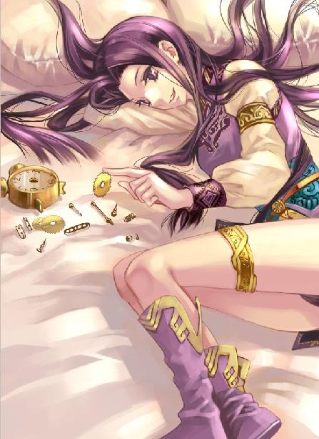
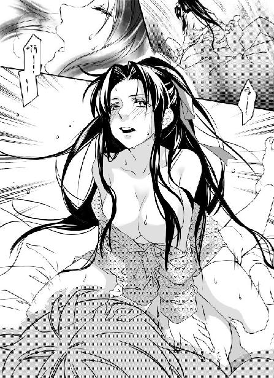
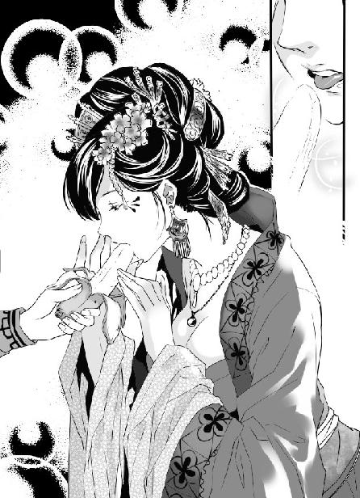

第26集·决胜之道
江州篇（2/7）
出版日期：2011-09-08
【本集内容简介】
月霜在战场上险遭挟持，更遇寒毒发作，苦不堪言。
在月霜休养之际，程宗扬胆边之恶未及生，竟受到月霜持剑武力威胁，不得不献出肉体以养其寒毒，生平首次如此丧失男性气魄……
北府兵掌权者谢幼度动向未明，晋国各大世家首脑对江州之战作壁上观；以商人为职志的程宗扬决心以经济策略拖垮宋军，联盟建康云家齐指最不可缺的粮食；与此同时，星月湖大营定下的“斩首行动”亦随之展开！
※ ※ ※ ※ ※

封面人物：小紫

插图：月霜

插图：梦娘（赵媛）
一股暗黑色的铁流涌入大雪覆盖的三川口。镶着蹄铁的马蹄溅开积雪，捧日第六军骑兵潮水般驰骋而来。冲在最前方的是骁骑营的军士，他们卸去甲胄，轻骑突进，在距离溪水还有五十步的位置便张开角弓，箭矢雨点般朝敌寇射去。
沿溪守御的雇佣兵分成两列，敖润带着数十名雇佣兵守在溪后，他挥舞长刀劈开几支箭矢，然后反手摘下铁弓，展臂挽成满月，瞄也不瞄便将最前面一名骑手射下马来。佣兵们发出一片欢呼，弓手纷纷张弓搭箭，还有几名擅长甩石的汉子则用皮绳兜起石块，在头顶甩了几个圈子，接着奋力甩出。
矢石交错，双方各有损伤，但骁骑营射来的箭矢无论数量还是力道都远远超过佣兵，这一轮较量无疑是雪隼团吃了亏。
很快骁骑营距离溪水只剩下十几步，佣兵的暗器开始出手，第一轮的飞蝗石和袖箭不约而同打向骁骑营的坐骑，尤其是马匹的眼睛。最前面六七匹战马嘶鸣着栽倒在地，将马背上的骑手抛开。
第六军两千骑兵作为捧日军的精锐，奉命出击，却被对手引得大兜圈子，折腾半日也没能好好打上一场，全军上下都憋着一口气。这会儿与中军大军只隔着两道溪流，一个冲锋就能将敌寇灭掉，士气高涨。面对射来的飞石、暗器，骁骑营毫无惧意，反而心生鄙夷，对手果然是一帮上不了台面的贼寇。
骁骑营的营旗越来越近，蜂拥而至的骑兵策马绕行，避开倒地的同伴。随着队中指挥官的命令，一边调整坐骑的步伐，一边收起角弓，摘下鞍侧的短枪，同时放低身体重心，开始冲锋，准备全速越过溪水，一举将敌寇的防线撕碎。
就在这时，对岸徒步的敌寇忽然朝两边跑开，露出后面一队骑兵。
两百名雇佣兵只有一半人有马，这时百余名骑手分成两个锥形的队伍，在溪水后留出二十步的空当，严阵以待。当第一股宋军骁骑踏碎冰面，驰过溪流，对面的骑手也开始行动。杜元胜和苏骁担任锥形阵列的箭头，身后分别是徐永和赵誉的两个班，再往后才是雪隼团的雇佣兵。
他们利用那片二十步的空当不断加快速度，在交锋的刹那坐骑的冲速也达到最快，只需挺起长矛，单靠马匹冲锋的势能，就足以刺穿对手的身体。而骁骑营刚越过溪流，速度不可避免地慢了下来，当坐骑踏上对岸，速度也降到最低。面对高速驰来的对手，骁骑营第一波攻击毫无悬念地败下阵来。
众人分工明确，杜元胜、苏骁、徐永、赵誉带着星月湖旧部负责攻坚，专克强敌，雇佣兵在后面席卷而来，转眼就将骁骑营的先头部队冲散。
战马和重伤的骑手不断跌入溪中，短短一盏茶时间，不宽的溪流便被堵塞。溪水慢慢涨起，浸过倒毙的人马尸骸，被染成刺目的红色。后面的骑兵被激起血性，毫不退缩，等于踏着同伴的尸体越过溪流，发起冲锋。
负责阻敌的星月湖军士和雇佣兵毕竟数量太少，压力迅速增大，眼看防线就要被撕开，三匹战马突然从队伍中驰出，逆着骁骑营的铁流杀过溪水。徐永一马当先，长矛运转如飞，不断挑开对手，另外两名上尉赵誉和杜元胜紧随其后，三骑联手杀开一条血路，朝骁骑营的营旗直逼过去。苏骁坠在后面，阻杀渡溪的宋军骑兵。
骁骑营指挥使郭逵策马抢出。他是第六军都指挥使郭遵的亲弟，麾下的骁骑营是第六军最强悍的骑兵，但自从进入烈山，连日交锋，寸功未立，却折损了五分之一的人马，刘宜孙、张亢这两名属下也去职被贬。如果这一仗再败北，不用兄长开口，郭逵自己便抹了脖子。
郭逵喝开亲兵，亲自上阵，挥起凤嘴刀，朝为首的贼寇劈去。徐永挺矛架住他的刀杆，双臂奋力抬起。郭逵的坐骑突然向前一纵，人借马势，硬生生将他的长矛压落下来。
宋军的坐骑高度普遍在一米五左右，算不上神骏，骁骑营的马匹却是重金购置的良马，腿长体壮，比寻常马匹高出一个头。徐永在坐骑上吃了亏，甫一交手就被逼落下风，失去先机。就在这时，他身旁那个不起眼的汉子突然一挟马腹，坐骑陡然加速，闪电从两人身畔掠过，抓住郭逵亲兵队列间一个细小的缝隙，穿了进去。
迎面便是骁骑营的军旗。十余名骑手团团围住营旗，那人刚一接近，六七支长枪同时刺来，将他的坐骑刺毙。
杜元胜弃马落地，身形一闪，游鱼般从两名宋军之间掠过，接着飞身而起，收在肘后的佩刀在空中划出一道雪亮的光弧，斩在旗杆上，将手臂粗的营旗砍成两截。
营旗被砍，不啻于在骁骑营脸上重重甩了个耳光。周围守旗的军士顿时都红了眼，拼命朝那贼寇攻去。杜元胜左臂一展，身在半空抢住那面被斩落的半截营旗，然后振臂横扫，将两名骑手打下马来，接着右手佩刀疾劈，将一名陷在马镫中的骑兵小腿齐胫斩断，跃上空鞍。
不足三十步的距离，杜元胜接连换了三匹坐骑，与他交手的骁骑营军士或死或伤，竟然无人是他一合之敌，眼看着杜元胜硬生生从敌阵中溃围而出，带着骁骑营的营旗，驰归本阵。
众人拼死拦截，却被一名不起眼的敌寇于万军丛中斩旗而还，满腔热血的骁骑营军士仿佛兜头被人泼了盆了雪水，士气大落。
徐永和赵誉轮流在前阻挡追骑，交替撤退，郭逵已经杀红了眼，紧咬着这两名贼寇，将两人死死缠住。
赵誉使出浑身解数，佩刀挽成一团光球，守住身体要害，忽然手腕一翻，刀柄猛然送出，砸开郭逵的凤嘴刀，将他逼退。赵誉正待借势后退，却见眼前黑影一闪，一匹通体乌黑、四蹄雪白的战马怒龙般破雪而来，马上的一名将领身形如岳，手中一杆铁枪撕开空气，发出刺耳的呼啸声。
赵誉两手握住刀柄，双肩一耸，佩刀劈出，正中敌将的枪锋。两人身体同时一震，赵誉胸口仿佛被一块巨石砸中，真气凝滞，余下的招术一时间无法使出，他长吸一口气，真气疾转，打通受创的气脉，但那名敌将比他更快，右手一伸，从鞍侧抽出一支铁鞭，兜头砸来。
鲜血猛然飞起，雨点般溅了徐永一身，宋军大呼声中，徐永脸颊微微抽动了一下，盯着来骑道：“郭铁鞭？”
郭遵一鞭击杀赵誉，眼睛落在徐永身上，低声道：“杀不尽的贼寇！”说着左手持枪，右手持鞭，跃马杀来。
徐永长矛由下而上，划了个圆弧，攻向郭遵的胸腹。郭遵铁枪扫出，徐永白腊杆制成的矛身弯成一个半圆，几乎折断。忽然徐永手掌一松，木制的矛身猛然弹直，他借势飞起，在空中扭身避开一支箭矢，大鸟般飞过十余丈的距离，落在对岸。
第六军都指挥使亲自上阵，格毙悍匪，宋军士气复振，狂呼着跃过溪流。苏骁和杜元胜左冲右突，但在骁骑营的攻击下，回旋的余地越来越小。
杜元胜闯阵夺旗，郭遵铁鞭破敌，两边军士跃马奋战，双方攻守之势像海潮般此起彼落。相比之下，星月湖主力所在的四营、五营一片寂静。这边全部是星月湖旧部，虽然苦战多时，战斗力仍远远越过雇佣兵。但他们面对的局势更加险恶，因为他们的对手是神射营。
第七军都指挥使卢政拔出佩剑，指向远处的敌寇。神射营五百名弩手以五十人为一列，紧邻着第二道溪水排成横阵。他们手持的神臂弓实际是弩机，长不过一米，所用箭矢只有六七寸长，箭尾装着木羽，丝麻混扎的弩弦绞紧，瞄向对手。
第一轮齐射，前面六列三百名弩手微微抬起神臂弓，同时扳动机括的铜牙，弩弦振动空气，发出沉闷的“嗡嗡”声，弓臂两端的齿轮飞速旋转，弹回原位。三百支利箭瞬间越过二百步的距离，以肉眼难以察觉的高速飞向敌寇。
程宗扬曾经见识过左武军的神臂弓如何将数百步外一整队长弓手消灭干净，神臂弓特有的“嗡嗡”声刚一响起，就立刻扑倒在地。崔茂和王韬几乎同时掠起，贯满真气的披风鼓胀起来，接着一瞬间就被箭雨撕成碎片。
在他们背后，来自星月湖四营和五营的军士举起盾牌，强行抵御宋军的神臂弓。他们的盾牌都是两层硬木制成，中间夹着坚韧的铁网，足以抵挡骑兵全力冲锋时的枪刺，然而面对神臂弓强劲之极的杀伤力仍显得单薄，不时有军士中箭溅血。
如果以这样的密集度来个十轮八轮，星月湖两个营铁定要付出惨重的代价。幸好神臂弓再强，也是靠人力拉的。第一轮齐射之后，后面三列射手退出战斗，踏住弓背的铁镫，借助弓臂两端齿轮力量，拉开弩弦，开始安装箭矢。没有参与射击的一百五十名士卒则将装好的神臂弓递给同伴，一边接过空弓，重新装箭。其余五十人则负责指挥射击，分发箭矢以及更换备用的弓弩。
宋军挑选射手，首先看中的是力气，能不能拉开硬弓，准头倒在其次。但神射营最前面三列一百五十名弩手都是挑选过的神射手。即使经历过敌寇突袭、前阵崩溃等一系列险恶的局面，刘平也没有派出神射营，一是因为风雪会影响神臂弓手的视线和准确度，更重要的是留着这支队伍，以应付敌寇随时可能出现的援军。这时风雪渐止，雪地上的目标分外清晰，郭遵的第六军又及时赶回，刘平不再犹豫，立刻派出神射营，接应渡溪的骑兵。
一百五十名神射手每人身后都有两人负责安装箭支，他们托起神臂弓，专注地盯着对手，轮流放箭，给敌寇造成连续不断的打击。
第一轮三百支箭的齐射之后，神射营稳定在每个呼吸五十支箭的速率。即使早有准备，神射营第一轮齐射仍给星月湖军士造成巨大的伤害。星月湖军士缓缓后撤，与神射营拉开距离。但神臂弓射程超过三百四十步，二百步以内杀伤力无敌天下。他们除非退过己方第一道溪水，陷入背后第六军铁骑的重围，否则都将处在神臂弓的威胁下。
程宗扬趴在地上，头顶箭矢破空的锐响接连划过。幸好自己没有穿星月湖的军服，更没有佩戴少校的军衔，不然五十名弩手一波齐射，就要了自己的小命。不过这时自己完全处于被动挨打的境地，指望那群视力超群的神射手看不到他，实在太不靠谱。
程宗扬深吸一口气，双掌按住地面，等弩弦响动的一刹那，足尖用力，猛然向前纵去，身体紧贴着雪地掠出。侧眼看时，神射营中至少有六张神臂弓转移方向，朝自己瞄来。程宗扬头皮一阵发麻，被这东西射中一箭，大概和挨颗子弹也差不了太多。
“老程！”刚从溪畔撤退的敖润一声大吼，从背后摘下一面盾牌，“呼”地猛掷过来。
程宗扬抬手接住，顾不得多想便横在身侧挡住要害。弩弦“嗡”的一声响起，几乎同时，盾牌像被铁锤砸到一样，发出“砰砰”几声闷响。
强劲的力道将程宗扬凌空撞开，他顺势一滚卸去力道，然后心有余悸地抬起盾牌。那面盾牌只有两尺大小，上宽下窄，表面呈现出角质青黑的颜色，盾内用烧炙法钻出孔洞，然后装上把手，份量并不沉重。
神臂弓射来的箭矢在盾牌表面留下几个凹坑，距离如果再近几十步，也许盾牌就被射穿了。程宗扬松了口气，这面盾牌是用龙神背部的鳞片制成，质地最为坚固，当初秦桧动用足以摧城拔寨的大黄弩也无法穿透，只能选择龙神相对柔软的腹甲攻击。自己在扬州的时候，给敖润和老张一人送了一面龙鳞盾，没想到却救了自己一命。
王韬飞身抢来，挥斧将另几支箭矢劈飞，一边道：“好盾！”
程宗扬咧嘴一笑，扭头朝敖润竖起拇指，敖润也用力挑起拇指，然后返身朝第六军的骑兵杀去。
崔茂面对铁甲营单骑踏阵，嚣张之态早已成为宋军的眼中钉。卢政亲自挑出几名射手，数张神臂弓一直盯着他。接连避开数轮攻击之后，终于有一支箭矢咬中崔茂负伤的右臂，将他手肘射了个对穿。
崔茂凶性大发，把混元锤往阵中一丢，俯身捡起几根长矛，用受伤的右臂挟住，飞身抢出十余步，左手连掷，贯满真气的长矛激射而出，一连刺杀了数名射手。
前面几列射手向后退去，避开飞矛的威胁，神射营的阵形微显散乱。忽然一支羽箭破空飞来，射在长矛下方尺许的位置，将崔茂掷出的长矛射飞。接着数十张神臂弓一齐朝崔茂射来。崔茂挥矛拨飞箭矢，接着振臂一挥，将这最后一支长矛也掷了出去，才飞身后退。
卢政挽起铁弓，一枚羽箭扣在弦上，瞄着崔茂的背影一箭射出。这支铁骨丽锥箭箭头狭小尖锐，不但势能破甲，而且破空时悄无声息。箭矢及体的刹那，崔茂似乎生出感应，身形一侧，铁骨丽锥箭透肩而过，带出一片血雨。
崔茂掠回本阵，他这几矛令神射营为之胆寒，自己也大耗真元，军服更是被鲜血浸透，不住从袖中滴下血来。程宗扬用龙鳞盾掩住他，望着他肩上的箭头，不由倒抽一口凉气。
那只箭头三面见棱，形如刀片，造成的伤口也呈三角形，是处理时最棘手的一种伤口。
崔茂三根指头挟住箭杆，微一用力，将箭头拗断，冷哼道：“卢政小儿，箭法还过得去。”
王韬测了下距离，心有不甘地说道：“若是老四、老五联手，说不定能取了刘平的首级。”
程宗扬道：“宋军的神臂弓太强了，硬拼不是办法。不如再往后退几步，让宋军的骑兵围过来。”
崔茂道：“是不是怕了他们的神臂弓，宁肯和骑兵厮杀，也不想面对他们的弓箭？”
没等程宗扬回答，崔茂便道：“我也是。”
程宗扬苦笑道：“崔兄这么坦白。”
崔茂折断臂上的箭矢，将带着木羽的箭支拔出来，一边道：“宋军的神臂弓犀利异常，说不怕那是假的。幸好只有一个营，如果再来一个营，我们肯定有多远逃多远。”
王韬道：“刘平吃了几次亏，学得小心起来。这会儿神射营耗费的箭矢不到两千支，射到天亮还有的剩。”
崔茂和王韬最忌惮的就是神臂弓，不过宋军急于进军，把辎重都扔在半路，一旦箭矢耗尽，神射营就成了没牙的老虎。眼看算盘落空，宋军不会大规模消耗箭矢与骑兵前后合击，崔茂和王韬只好改用守势，指挥属下逐步向后退却。因为有溪水阻挡，神射营难以在酷寒的天气中越溪追杀，只能逐渐加大射程。不过两道溪水间总共只有二三百步的距离，神射营即使寸步不进，也能将对手全部笼罩在神臂弓的射程之内。
程宗扬实在不想充当神臂弓的人形移动靶，随即与崔茂、王韬二人分开，靠着龙鳞盾掩护，更是靠着孟非卿这些天强训的临阵经验，终于在神臂弓的威胁下全身而退。
双方骑兵的对攻惨烈无比，溪流中坠满倒毙的人马尸骸和折断的刀、矛、战旗。在军都指挥使郭遵的率领下，第六军的骑兵全面撕开对手的防线，将敌寇压迫在只有几十步宽的一小片区域内。
臧修的坐骑已经被射成刺猬，这会儿徒步紧跟着月霜，他护体的金钟罩全力施为，金光灿灿的躯体宛如金甲天神，手中雷霆战刀不住轰鸣，将侧方杀来的敌骑一一劈下马来。
月霜娴熟的骑术在狭小的空间内展现得淋漓尽致，她踩着马镫，身体微微抬起，灵活地策动马匹，像舞蹈般越过地上的尸首，不止一次依靠纯熟的骑术将敌骑甩开。
置身于战场中，浓郁的死亡气息像潮水一样源源不绝地涌来。厮杀声、叫喊声、刀盾相交的撞击声交织在一起，身手再高明的强者，在这样的搏杀中，能感受到的，也是自己的渺小。严格的纪律，整齐的阵形，才是唯一的保命之道。
在捧日军铁骑的攻击下，雇佣兵逐渐不支，一点一点败下阵来。敖润眼看形势不妙，大呼道：“雪隼的兄弟们！别忘了咱们雪隼的荣誉！雪隼必胜！”
在敖润的鼓动下，佣兵们重新鼓起斗志，竭力挡住骁骑营的攻势。
双方的战线犬牙交错，到处是奔驰的铁马，飞舞的兵刃，鲜血一朵朵在雪地上绽放。太阳穴的伤痕霍霍跳动，一股久违的嗜血欲望被唤醒，像燃烧的烈酒一样辛辣。
程宗扬把龙鳞盾系在背后，然后抽出双刀，一招饿虎吞羊，将一名宋军骑兵劈下马背。后面一名骑手提枪冲来，程宗扬往旁边跃出半步，人马相交的刹那，身体一旋，双刀砍在那人腰间。
正被围攻的一名雇佣兵缓过气来，喘着气道：“兄弟好身手，也是星月湖的爷儿们吧？”
“你是跟着苏骁的？难怪没见过我。我是他的指挥官！”程宗扬喝道：“跟我来！别被冲散了！”
程宗扬领着那名落单的雇佣兵朝左首冲去。十几步外，几名佣兵汉子被一小队骑兵围住，不断有人溅血倒地。
“刺马腹！”程宗扬喝道。
那名雇佣兵持枪朝骑兵的战马刺去，骑手策骑闪避，早已蓄势待发的程宗扬腾身而起，一刀劈中骑手的短枪，一刀劈断他的脖颈。
骑兵的包围圈被打开缺口，几名佣兵全涌了过来。程宗扬叫道：“两个使枪的在后面！抵住他们的马！其他人跟我退，不要走散了！”
几人聚在一起且战且退，途中又救出两名佣兵。程宗扬这支小小的队伍就像一块磁石，将零星散落在战场上的佣兵不断吸引过来。宋军也注意到这支不断膨胀的队伍，纷纷策骑杀来。
孟老大在晴州那些日子的强训此时显出效果，程宗扬镇定地收拢队伍，采取守势，一有机会就猛然出击，每次目标只锁定一名对手，尽可能速战速决。
等程宗扬与敖润会合，身边已经有二十余人，倒在众人刀枪下的宋军也差不多有同样的数目。敖润身边还有七八个人，双方会合后，压力顿时轻了许多。这时溪水旁已经逐渐形成几个小的战场，无论是宋军还是雇佣兵，只要落单都只是一个死。
“老程，看不出你一个公子哥儿还有一手哇。”敖润喘着粗气道：“硬是拉出来二十多名兄弟，老敖服了！”
程宗扬拍了拍背后的龙鳞盾，“你这盾可救了我两次呢。”
说话间，又一队骑兵冲来，程宗扬大声指挥手下的佣兵，按照星月湖大营的方法结成战阵，然后当先掠出，将最前面一名骑兵劈下马来。
鲜血淋漓洒落，浓烈的死气笼罩在自己刀上、手上、衣服上，奇怪的是那种刺目的殷红却让自己想起草原那个夜晚。
程宗扬抬眼朝月霜望去，那丫头被一股骑兵缠住，举剑左劈右刺，她手下一个班的军士这会儿还剩下四人，臧修光着膀子，赤裸的躯干肌肉块块隆起，蛮横地将敌骑刀枪尽数挡住。鲁子印和两名同伴紧跟在月霜马后，替她挡开后方的攻击。
一股敌骑迎面杀来，为首一名大胡子敌将怒马如龙，威猛如虎，正是第六军都指挥使郭遵。
郭遵双手持枪，从鞍上侧过身，与臧修的雷霆刀硬拼一记。臧修沉腰坐马，双腿没入雪泥，雷霆战刀刀身的光泽微微一黯。
郭遵没有理会臧修，战马白色的四蹄风一般驰过沥血的雪原，径直朝月霜驰去。单看她身边的卫士，就知道这女子是敌寇的紧要人物，只要杀了她，便能重挫这群悍匪的士气。
月霜丝毫不惧，长剑匹练般卷起，剑身透出耀目的光华，一招伏魔，已经用上王哲亲传的真武剑。
郭遵满拟将她一枪刺死，见到她使出的剑法，又改变了主意。铁枪一沉，由直刺变为下压。月霜长剑递到一半，就仿佛被千斤巨石牢牢压住，连接运了几次力也未能挣脱。
错马而过时，郭遵右手张开，一把抓住月霜的胸甲。月霜惊怒之下，抬手挽起腰侧的手弩，朝郭遵射去。
郭遵头颈微微一摆，闪过弩矢，接着将月霜从鞍上拽起。鲁子印暴喝声中，双手各挺起一根长矛，朝郭遵刺来。郭遵铁枪挥出，不等他变招，便击在他矛杆中间，将他双矛一并砸断。
月霜被他抓住胸甲，玉颊涨得通红，双手拧住郭遵的手腕，一记鞭腿踢向他腋下。忽然胸口一麻，一股强劲的真气透体而入，先封住她胸口几处要穴，然后透入气海、石门二穴，将她丹田牢牢制住。
郭遵提枪逼开鲁子印，随手将月霜放在鞍上，坐下的乌云盖雪如通人性，倒退数步，然后朝横里一纵，跃出臧修等人的围攻。
月霜体内数道真气乱纷纷在经络间游走，勉强提起一些，遇到被封的穴道便即溃散。她知道自己的修为与郭遵差得太远，但仍旧不甘心，拼命摧动真气。
战场上除了程宗扬手下一支，还有几支以星月湖旧部为主的队伍，分散在战场各个角落。看到月霜被擒，周围的星月湖旧部纷纷放开对手，赶来截杀郭遵。胜利的天平逐渐向捧日军一方倾斜。
月霜咬紧牙关，竭力冲开被封的丹田，眼前奔跃的战马，头上扎着额带的雇佣兵，全副武装的铁骑，精赤上身狂呼猛斗的骁骑不断闪过。忽然刀光一闪，两柄雪亮的钢刀对着自己的脖颈猛劈过来。月霜瞪大眼睛，别人都是舍命与郭遵厮杀，那个无耻的胆小鬼出手的目标竟然是自己！
郭遵刚擒下月霜，当然不肯让她这么被杀，他横过铁枪，挑开双刀，却见那年轻人双刀一展，刀光霍然绽开，使出一轮刚猛之极的招数，攻击的不仅有自己刚擒下的俘虏，还有自己的要害和战马。
郭遵浓须飞扬，铁枪连刺，将他的攻势尽数挡下，接着右手拔出铁鞭，霹雳般挥出，将那年轻人的钢刀一举磕飞。
程宗扬等的就是这一刻，趁郭遵双手都拿着兵刃，他握住袖中的匕首，举臂挡住郭遵的铁鞭，然后一把抓住月霜，将她拖下马来。
郭遵铁鞭一震，砸在那年轻人臂上，却如中铁石，他眉峰微微一挑，左手的铁枪随即划了半个圈子，朝那年轻人刺去。程宗扬把月霜抱在胸前，转身腰背一弓，用背脊硬挨了郭遵铁枪一击，然后腾身跃出。
枪尖“砰”的一声钝响，却是刺中了那年轻人背后的盾牌。郭遵策马欲追，一名佣兵汉子舍命扑来，吼道：“直娘贼！敢伤副队长！这是抠我老敖的眼珠子哇！”
遇上这么个不要命的狂徒，郭遵也不得不收敛心神，挺枪与他战在一处，眼看着那个年轻人几个起落，消失在千军万马中，他微微皱了皱眉。
程宗扬用背脊承受住郭铁鞭一击，一口血几乎喷了出来，他咬牙切齿地抱住月霜，一路狂奔，朝星月湖军士的阵列逃去。
月霜咬牙道：“放开！”
程宗扬用尽法宝才把她抢出来，看着她厌憎的眼神，顿时气都不打一处来，叫道：“装什么装！我又不是没抱过！”
月霜瞪着他，通红的脸色突然间变得雪白，片刻后猛地吐了口鲜血。那口血寒气四溢，里面还有细碎的冰晶，落在胸甲上立即凝结起来。
程宗扬瞪目结舌，过了会儿才叫道：“你傻啊！受了伤还胡乱冲穴，你不要命了？”
月霜樱唇颤抖着，勉强吐出一个字：“滚……”说着又吐出一口血。
程宗扬一口气奔到阵后，勉强止步时，两腿都有些不听使唤，一跤坐倒，险些把月霜扔出去。
一双手接住月霜，王韬道：“月姑娘受伤了吗？”
“死不了！”程宗扬叫道：“受伤的不止她一个，我也受伤了啊。干！郭铁鞭这一枪真够狠的……”
郭遵已经将敖润逼到下风，就这时，远处悬着豹尾的大纛向后一摆，发出撤军的命令。郭遵冷哼一声，放开这个幸运的家伙，带着麾下的骑兵驰回中军，与主将的大营合兵一处。
这一刻定格在下午三点十五分。从早上七点开始，双方几度攻守，整整鏖战了四个时辰，死伤超过三千人。
宋军伤亡最为惨重，王信的第三军几乎不复存在，由于黄德和的临阵脱逃，卢政的第七军只剩下两个半营，郭遵第六军的两千骑兵也折损三成。但更重要的是，宋军有半数以上步卒都冻伤了脚，随着战事的拖延，情况只会越来越严重。
江州军一方，崔茂和王韬的两个营伤亡接近三分之一，尤其是神射营的几波箭雨，使伤亡数字大幅增加，连崔茂也负了伤。至于程宗扬带来的人马，五个班的星月湖劲卒还有半数能战，两百雇佣兵则在骁骑营的冲击下损失了四成，连远远躲在阵后的冯源都被角弓射中一箭。
这时候便看出雇佣兵与真正百战之师的区别，雇佣兵投入战场最晚，作战范围也仅限于第一道溪水附近，接战之初，雇佣兵还能凭着勇气与宋军对攻，随着伤亡的增加，雇佣兵的士气迅速低落。好在有杜元胜、苏骁和敖润等人约束，总算没有出现阵前逃散的局面。这时趁着敌军撤退的空歇，连忙整队。
王韬双掌按在月霜背上，虽然是寒冬天气，他头上却冒出丝丝缕缕的白雾。月霜脸色苍白，唇角的血迹已经结冰，看得出这丫头体内发作的寒毒苦楚万分，却死死咬住牙关，连眉头也不皱一下。
王韬已经解开她被封的穴道，却对她体内的寒毒束手无策。崔茂坐在一旁，半边军服褪在腰下，一名军士正用雪团帮他清理肩、肘的伤口。
程宗扬用望远镜看着宋军，一边道：“刘平好像要退兵了。”
崔茂道：“想硬吃掉我们这点人马，只怕崩了他们捧日军的牙，等二团的直属营出来，刘平想走也走不了。老七，怎么样？”
王韬松开手掌，“要压下寒毒也不难，但这股寒毒藏于丹田，与气血相连，如果强行压制，下次发作为祸更烈。最好设法徐徐发散。”
“不对啊。”程宗扬忽然道：“他们好像放弃来时的大路，改走小路了。”
崔茂不以为意地说道：“宋军也有精明人啊。”
程宗扬放下望远镜，“怎么回事？宋军怎么放着大路不走，走小路呢？”
“多半是有人发现大路雪厚盈尺，小路没有积雪吧。”
程宗扬怔了一会儿，然后抬手划了一个圈子，“你们不会就在三川口下了这场雪吧？”
崔茂屈伸了一下手臂，说道：“方圆十里。再远就顾不上了。”
程宗扬叫道：“你们这也太偷懒了吧？”
“你知道下这样一场雪，需要耗费多少力气吗？”崔茂道：“这场大雪，至少抵得上两个营！”
王韬送入一缕真气，让月霜沉沉入睡，一面道：“此地寒气太重，要赶快把月姑娘送回去。”
说着他和崔茂都看着程宗扬。
程宗扬道：“行了，我就知道这是我的活儿。只不过这会儿正要紧的时候，我们撤军没关系吗？”
“放心。”崔茂淡淡道：“刘平若不趁着这个机会逃命，就是个傻瓜。”
※ ※ ※ ※ ※
程宗扬带着残存的雇佣兵撤离战场。离开三川口不到半个时辰，路上的积雪已经消失，有人道：“怪事，这边怎么一点雪都没下？”
冯源道：“山上下雪山下晴，这有什么好奇怪的？喂，程头儿，真有那么大的龙睛玉吗？你别蒙我啊。”
“……冯大法，你要是个女人，铁定是个死抠的八婆！”
与来时相比，程宗扬带的人马人数虽然少了四成，马匹却多了一倍。由于宋军是主动撤退，来不及收拢马匹，大量无主的战马弃置在第一道溪水之后，程宗扬临走时便把能带走的马匹全部带走。
他本来想留些人手给崔茂和王韬帮忙，但那些雇佣兵经历了刚才一番血战，锐气已丧，留下来也派不上什么用场，程宗扬索性让他们带上重伤的军士，一同撤回江州，只留下两个班的星月湖旧部。
一营和六营一共六名上尉连长，但六营的肖浑在大草原战死，一营的赵誉又被郭遵格杀，现在还剩下杜元胜、苏骁、臧修、徐永四人，这时除了臧修，其他几人都留在三川口，协助四营和五营作战。
这一仗虽然能称得上以少胜多，但惨烈的血战令众人都心有余悸，一路上气氛沉闷。程宗扬干脆宣布，所有参战的雇佣兵，包括伤者在内，每人分一匹马。
晋宋都缺乏马匹，一匹马差不多能卖到二百个银铢，何况这些都是上好的战马。听到这个消息，雇佣兵顿时欢声一片，受挫的士气又重新振作起来。
队伍中有十几辆大车，从战场撤回的一百多名伤者都在车上，最前面一辆车内用布幕隔开，单独给月霜留出空间。臧修寸步不离地跟着大车，他在郭遵手下吃了暗亏，两道受创的经脉还没有复原，对于月霜的受伤更是大为自责。
敖润右胯被郭遵的铁鞭扫到，如果不是宋军撤退，一条腿便废了。他受了伤还闲不住，有事没事便过去瞧瞧月霜，生怕她有什么不妥。倒是冯源挨了一箭，仍然兴高采烈，和佣兵们说起自己放的火墙，手比脚划，口沫横飞，恨不得把火墙再加高加长十倍，声势再放大百倍。
当晚众人出了烈山，在山脚宿营。虽是冬季，原野上仍颇有绿意，回想起刚才在三川口冒雪冲风一场血战，都不禁有种恍如隔世的感觉。
程宗扬在战场上收拢落单佣兵的举动，大伙儿都看在眼里，不仅那几十个被救的佣兵感激，更赢得众人的信任。等冯源再说起当日从瓠山到晴州一路上的交情，几千银铢的上等货拿来送人的豪爽慷慨，那些佣兵对这个年轻人的好感更是直线上升。
程宗扬与那些佣兵说笑了一会儿，又去看了看伤员，巡视了营地，入夜才回到自己的帐篷，盘膝而坐。
昼间吸收的死气经过生死根进入体内，在经络间鼓胀震动。如果自己还是那个毫无修为的菜鸟，这些珍贵的真阳一路上早已散发殆尽。但现在，每一缕吸收的死气，都将成为自己修为的一部分。
程宗扬调匀呼吸，然后舌尖顶住上颚，双目微闭，屏息凝神，由外呼吸转为内呼吸。
通过内视，肉身仿佛一座奥妙无穷的宝库，在心神的注视下打开大门。十二经脉、十五络脉与奇经八脉织构成复杂的网络，贯穿全身。程宗扬收敛心神，真气送入手足的少阳、阳明、太阳六条阳脉，然后进入阳维、阳跷二脉，在八条阳经各运行一周天之后，再气沉丹田。
腹部关元、阴交、气海、石门四穴在经络中凝成四个明显的白点，仿佛四座雄关，守护着丹田要害。月霜正是被郭遵封住这几个穴位，才真气受制。在四处穴道中间，是一片虚空般的深渊。深渊中间是一片乳汁般的云海，一只气轮在其中缓缓旋转，散发出淡淡的白光。
程宗扬催动气轮，将弥漫的真阳转化为真元。气轮每转动一次，那片云海便淡上一分。这次吸收的死气是自己在大草原之战后最多的一次，那片云海又浓又厚。不知过了多久，那些蕴藏着浓郁生机，呈现出弥散状态的真阳都融入丹田气轮，终于被气轮吸收殆尽。
程宗扬心神略微放松了一些，注意力转移到气轮上。这时可以明显看出，气轮不仅体积膨胀了一些，亮度也更高。
进入第四级入微的境界之后，程宗扬就发现气轮是由无数细小的莹光组成。这会儿他凝神入定，将视野再次深入，构成气轮的无数细小光点变得清晰。程宗扬惊讶地发现，那些莹白的光点同样在各自转动，而且每一颗的形态都有着微妙的差异。它们密集地聚在一起，既构成一个庞大的整体，又各自有各自的运行轨迹。
程宗扬好奇心起，心神极力深入，但视野拉至某一个距离之后，就仿佛碰到一道无形的屏障，无法更进一步。
这里大概就是自己目前的极限吧？程宗扬尝试一番之后，终于放弃。借助大量死气，自己已经接近第四级的巅峰，一旦突破这个屏障，也许就能进入到更高的境界了。
※ ※ ※ ※ ※
由于队伍中有伤员，众人行进速度并不快，到达江州已经是八日下午。刚入城，萧遥逸便闻讯赶来，亲自护送月霜回客栈。
“为什么是客栈？”程宗扬道：“她不是在大营住吗？”
“军营到底简陋，还是客栈周全一些。况且还有紫姑娘——有些事，咱们大老爷们儿总不好插手吧？”萧遥逸唉声叹气地说道：“我早就说从宁州带几个小婢过来伺候，月姑娘总不同意。哎，月姑娘这会儿怎么样？”
“好了些，但寒毒还没压下去。”程宗扬道：“看样子不会有什么大碍，静养几日就好了。”
“五哥送的药吃过了吗？”
“吃过了。”程宗扬想起那天给月霜喂药的情形，胯下不由一振，连忙干咳一声，移开话题，“烈山有消息吗？”
“有！”萧遥逸道：“捧日军不走了。听说刘平在山丘上设了木栅，结营自守，今晚月黑雾浓，正适合夜战。”
“刘平脑子里面有虫吗？两天时间，爬都爬出烈山了，怎么想起来在山里结营呢？”
萧遥逸笑嘻嘻道：“因为雾太大，他们迷路了。”
“开玩笑吧，怎么会起雾，还迷路——干！不会又是你们捣的鬼吧？”
萧遥逸得意地说道：“那当然！”说着他又叹了口气，“如果文泽还在就好了。大营的法师凋零得厉害，会雷法的只剩两个。不然十几名法师联手放出五雷诀，保证宋军的战马立刻炸营。”
伤员被送入城西的伤兵营，雇佣兵就地解散，各自回去休整。一大半人当即带着马匹到东市换成银铢，接着涌进兰姑的水香楼。剩下的马匹程宗扬毫不客气地全部占为己有，让臧修带去先组建两个骑兵连。
萧遥逸叫道：“我的马呢！”
“死了！”程宗扬道：“这些都是捡的，跟你没关系！想要你也去捡啊。”
“太过分了吧！”
“反正也是给你的六营用了。小气什么呢。对了，孟老大在不在？我有件事想跟他商量。”
萧遥逸被他岔开话题，说道：“老大去了宁州。这几日恐怕不会回来。”
“他们怎么都往宁州跑呢？在萧侯爷那边？”
萧遥逸道：“是谢幼度。”
程宗扬勒住马匹，“北府兵？”
萧遥逸点了点头。
谢幼度的北府兵这时候来插一脚，目标是大兵压境的宋军，还是占据江宁二州的星月湖大营？
程宗扬沉思良久，然后道：“我要去宁州一趟。”
“今天已经晚了，”萧遥逸道：“明天我来安排。”
※ ※ ※ ※ ※
萧遥逸得到消息，就将客栈楼下一间厢房布置成静室，房间内铺着厚厚的地毯，床榻上堆着锦衾，旁边四只半人高的黄铜薰炉烧得滚热。一进门，就让人忍不住想流汗。
月霜一路都在沉睡，好在呼吸平稳，寒毒的发作也没有恶化。萧遥逸小心地把月霜送进房内，安顿停当，然后道：“我回大营一趟，晚上一起吃饭。”
程宗扬一口答应。等萧遥逸离开，他上楼去找小紫，房间内却空无一人。程宗扬叫来守卫，“紫姑娘呢？还有萧五呢？都跑哪儿去了？”
“紫姑娘去东市买东西，萧副官随行陪同。”
“那个……紫姑娘是一个人去的吗？”
得到守卫肯定的答复，程宗扬一阵心动。死丫头平常都把梦娘藏在房中，不与外人接触，这会儿她出门在外，梦娘留在房内，倒是自己的好机会。
程宗扬溜进小紫房内，满心以为能找到那个尤物，谁知房内空荡荡的，自己连抽屉都打开找过，硬是没找到梦娘一根汗毛。不知道死丫头用了什么花招，竟然把一个大活人藏得不见踪影。
程宗扬在战场吸收了大量死气，体内真阳满溢，一路上都打着主意，回来找个机会拿梦娘泄泄火，没想到箭都架上了，靶子却没了。
死丫头，真有你的！程宗扬叹了口气，还是等小狐狸晚上吃饭的时候，一起去水香楼大大方方地偷鸡摸狗比较方便一点。
在房里转了两圈，程宗扬突然觉得百无聊赖起来。死丫头不在，萧五不在，祁老四去了工地还没回来，连那位梁上君子也没来凑热闹，整个内院只剩下自己一个人，寂寞得几乎都空虚了。
程宗扬心里一动，想起还有一个人。
几只黄铜薰炉都烧着炭，炉身在高温下微微发白。程宗扬走到榻旁，低头看了看，那个小美人儿闭着眼睛，玉颊雪白，不知道是不是太热的缘故，唇瓣有种异样的嫣红。
这会儿周围一个人都没有，程宗扬抬手在她光滑的脸颊捏了捏，小声说道：“月丫头……”
月霜仍在昏迷，只是被他手指捏过的部位，泛起一抹红色。
程宗扬俯身探了探她的鼻息，呼吸还算正常，略微放心了些，一边道：“你也是的，一个丫头片子，先天不足，还起个什么劲儿呢？自己把自己冻成冰棍，这下高兴了吧？”
正说着，程宗扬胸口忽然一痛，膻中穴被人一掌封住。在他惊愕的目光下，月霜美目圆睁，一把拽住他的衣襟，把他扔在床上，然后翻过身，屈膝顶住他的胸口，一把拔出枕侧的长剑，架在程宗扬颈中，咬牙道：“你要敢叫，我便杀了你！”
程宗扬后悔得连寻死的心都有，小声道：“你可别乱来啊……英雄！”
月霜美目蒙着一层水雾，眼中布满血丝，她咬紧牙关，美貌的脸庞充满羞怒而愤恨的表情。忽然长剑一闪，用力刺下。程宗扬心脏险些从喉咙里跳出来，只见那柄长剑紧贴着自己的脸庞刺进榻内，秋水般的剑身映出自己因为惊吓而扭曲的面孔。
“将军！冷静！冷静一点！”
腰间一松，月霜一手扯断他的衣带，把他裤子扒了下来。接着一只冰凉的手掌握住阳具，粗鲁地拽了几下。程宗扬连惊带吓，阳具软趴趴的，哪里还有半点雄风？
程宗扬心里惨叫，月丫头也太狠了吧！真要把自己子孙根割掉，自己也不用活了！
月霜手掌又凉又滑，握住自己阳具的手指僵硬着，微微颤抖。程宗扬心头怦怦直跳，那种感觉就像躺在手术台上，却发现大夫比自己更紧张。真被她一剑割了，自己一头碰死也就完了，怕就怕万一她手艺太差，只割了一半……就是死了也被人耻笑啊！
月霜咬牙瞪着他，然后握住剑柄，拔出长剑，架在程宗扬颈中，低声喝道：“硬起来！”
大点的割着好玩吗？程宗扬实话实说：“硬不起来……”
剑锋划破皮肤，带来尖锐的痛楚，“硬起来！”
程宗扬一股怒气上涌，豁出去道：“你拿着刀子来回比划，我还硬个屁啊！想让它硬，你用嘴巴舔啊！喔！我干……”
月霜一拳打在自己胯下，那种感觉，就像被一头漂亮的母犀牛顶了一下。如果不是穴道被制，自己这会儿就该捂着裆满地打滚了。
预料中的那一剑并没有切下来，月霜发红的美目瞪着他，目光充满厌憎、鄙夷、愤恨、不甘……还有一丝难以名状的委屈。
月霜厉声道：“闭上眼！”
程宗扬尽量放缓语调，温言道：“月丫头，别忘了，我救过你啊！你这样对得起师帅，对得起你妹妹吗？就算你不用，你妹妹以后还要用的啊！唔——”
月霜扯过枕头，重重砸在程宗扬脸上，把他的抗议堵了回去。
月霜一手握住自己的阳具，像挤牛奶那样粗暴地挤弄着。程宗扬发现，自己的小弟果然是个很没出息的东西，即使面临着死亡威胁，仍然恬不知耻地硬了起来。
程宗扬脑中飞快地转着，这疯丫头会怎么切？斩草除根，切个一干二净？还是会留下睾丸，只割掉自己的小棒棒呢？最可怕……最残忍……最变态的……也许是竖着切……干啊！她让自己硬起来，是不是就打的这个主意？
耳旁传来窸窸窣窣的声音，过了一会儿，又没了动静。正当程宗扬疑神疑鬼的时候，枕头突然掀开，月霜把长剑架在他的颈中，粉面涨得通红，口气却寒冷如冰，“你敢叫！我就杀了你！”
这种威胁一点创意都没有，一会儿工夫她就说了两遍。程宗扬小声道：“我不叫……别冲动啊，什么事大家都可以商量……”
月霜胸口起伏片刻，然后含怒道：“怎么做？”
程宗扬脑中一晕，过了会儿才回过神来，发现月霜衣服下面露出两条雪白的小腿，原来穿的长裤脱在一边。
程宗扬恍然大悟，“你……”
月霜厉声道：“你敢说出来，我就杀了你！”
程宗扬连忙闭上嘴，使劲点头。
月霜咬住嘴唇，忽然眼圈一红，美目中闪过一丝泪光，接着又忍下去，“你敢说出去，我就杀了你！”
程宗扬急忙摇头。
这一幕实在够二的，说的不知所云，答的也牛头不对马嘴。幸好两人都知道对方的意思，不至于搞错。
“别冲动，别冲动，我一定配合！”
“你爬上来……”
“像骑马那样……对……”
“……然后坐下来……”
“嗷——”
程宗扬一声惨叫，脸色铁青。月霜就那么一下子坐下来，险些把自己的子孙根撞折。如果不是还有点弹性，这会儿就该变双截棍了。
月霜也一手按着小腹，面露痛楚。
程宗扬喘了几口气，看着脸旁的长剑，把到了嘴边的粗话又咽了回去，忍痛说道：“你把下边——就是那个地方——拨开，对着它慢慢坐。”
“闭嘴！”月霜瞪着眼喝道，然后把长剑递到他颈下，命令道：“把眼睛闭上！”
这丫头已经失去理智了，惹翻她绝不是个好主意，程宗扬识相地闭上眼睛。过了一会儿，月霜一手扶住自己的阳具，接着一个软软的东西撞在自己龟头上。
程宗扬悄悄把眼皮睁开一线，只见月霜垂着头，一手放在腹下，一手扶着自己的阳具，努力寻找进入的部位。
她柔嫩的阴唇在雪白的指缝间张开，露出里面红嫩的美肉，隐约能看到她下体那只娇美的蜜穴。如果抛开自己面临的危险不谈，眼前这一幕还是很诱人的。一个英姿飒爽的小美人儿主动骑上来跟自己搞，简直是梦里才有的待遇。
程宗扬生怕惹翻这个易怒的丫头，索性装成尸体，任她折腾。
月丫头真够锲而不舍的，她下体仍然干涩，却强忍着痛楚挪动身体。过了一盏茶时间，好不容易身体一沉，将阳具套入紧窄的肉穴内。
说实话，刚开始的感觉实在是不好。月霜下体还没有充分湿润，龟头摩擦间带来火辣辣的痛意。可以想象，月丫头所受的痛楚还要更强烈，但那丫头死死忍着，一声不吭。本来挺香艳的事，让她做得三分像用刑，七分像打仗，就是一点不像做爱。
至于程宗扬，免不了露出龇牙咧嘴的表情，无言地表示抗议，同时暗示她技术太差。换来的结果是月霜把枕头重重扔在他脸上，又重重擂了一拳。
虽然做着最亲密的交媾，月霜仍对身体接触表示出极大的反感。除了必须接触的部位以外，月霜不但把自己包得严严实实，还极力避免碰触他的身体。
被她骑着的感觉不但像是强奸，而且像奸尸，自己就是那具倒霉的尸体。作为男人，这种被动的感觉简直窝囊透顶。程宗扬视线被挡，只能感觉着她的小嫩穴悬空套在自己的肉棒上，生疏而笨拙地来回起落，她体内寒意极重，虽然室内热气蒸腾，身体仍然一片冰凉。
距离自己上次在她体内射精，已经快两个月时间。这次她全力出手，反被郭遵强行压制，郭遵并不想伤她性命，出手颇有分寸。如果是别人，调息两日便恢复如初，但月霜体内的寒毒全靠真气压制，一旦受制，寒毒立时发作。再加上她不顾性命地冲击被封穴道，受创更重，丹田内像结了块寒冰般，久久不能化开。
如果慢慢休养，差不多要几个月时间才能复原，然而宋军云集江州，接下来一段时间必定大战连场。对于一心想上战场的月霜来说，让她在后方慢慢养伤，看着别人上阵破敌，比杀了她还难受。
被太乙真宗的迷香迷倒那晚，月霜并不确定当时发生了什么，但在瓠山时发作的寒毒突然消失，体内又多了一些他人留下的异物，让她很快联想起草原那个夜晚。
这个混账！月霜恨不能将他碎尸万段。可体内的寒毒千真万确弱了许多，而且此后一段日子里，真气运行更加顺畅，原本用来克制寒毒的真气释放出来，许多以前曾经无法施展的招术都运用自如。
即使月霜对那个混账没有半点信任，也不能不想起师帅曾经暗示过她，那个混账所具有的充沛的真阳。也许这就是那个混账男人唯一的用处。
月霜下体渐渐湿润起来，虽然体内依旧冰凉，但那种紧密的柔腻感，渐渐有了交合的快感。程宗扬一路上早就亢奋无比，只想回到江州尽情发泄一番。尽管月霜不是自己期待中的梦娘，却是一个更加鲜嫩的少女，即使寒毒发作、体冷如冰，仍然充满青春的活力。
程宗扬很想提醒她速度可以再快一些，动作可以放得更开一些，屁股也可以扭一扭，增加一点气氛……但他知道，自己如果说出来，轻则要挨通暴打，严重点很可能就有血光之灾。这种感觉实在很不爽，自己就像被月丫头强暴一样，还得忍气吞声，免得她给自己来个先奸后杀。
月丫头啊月丫头，你既然做得初一，我就做得十五，等我翻过手来，肯定要你好看！你不是喜欢上面吗？到时候就让你用女上式骑在哥哥腰上，搞到腿软！
这么想着，程宗扬不禁兴致勃发，阳具一柱擎天，硬梆梆顶在小美人儿嫩穴里。
整个过程乏善可陈，总之就像被人硬撸一样，不知过了多久，程宗扬精关一动，直挺挺在月霜体内喷射起来。
月霜秀发湿淋淋地贴在颊上，脸色苍白如纸。她体内寒毒肆虐，经脉受创，全靠顽强的意志才坚持到现在。这会儿下体又胀又痛，像初夜破体一样，双腿几乎无法合拢。
好不容易捱到那个混账射精，月霜立刻撑起身体，用衣物掩住下体，然后提剑架在程宗扬颈中，口气森冷地说道：“我再警告你一次！敢说出去，我便把你碎尸万段！挫骨扬灰！听清楚了吗？”
“听到了。”
“不要以为自己有什么了不起，你只是一件工具，就要有当工具的觉悟！”月霜瞪着眼睛道：“今天饶你一命，滚！”
说完月霜提起程宗扬，把他丢到门外，“呯”地关上门。
就这么被人用完后扔出门，程宗扬心里悲愤而又苍凉，感觉直想挠墙。这口窝囊气憋在肚里，简直要把肺气炸。眼前这一幕应该反过来，自己用武力威胁，把月丫头强暴了，干完之后提上裤子，再得意洋洋地放几句“敢说出去，杀你全家”之类的狠话。然后月丫头抱着衣服，哭哭涕涕说：“人家已经是你的人了，呜呜……”
结果自己一个大老爷们儿，竟然被一个丫头片子给霸王硬上弓，还遭受人身威胁被警告不许向外说。妈的，自己脸皮再厚，这种丢脸事也不会向外说吧？
程宗扬提着裤子，用力竖起中指。月丫头，算你狠！这事咱们没完！
※ ※ ※ ※ ※
刘宜孙重新扎紧手臂上松开的绷带，然后往掌心唾了口唾沫，握起旁边一柄柄部折断的大斧，用力砍断榛树的树身。
宋军残部聚集在一个小山丘上，依地势树起重重栅栏。从六日黎明与敌寇交锋开始，他们已经连续作战三日。
从三川口撤退之后，一场突如其来的大雾笼罩了视野。由于沿途遭受敌寇袭扰，六日夜间，郭遵的第六军有三个营的骑兵与中军失散，紧接着，宋军主力发现自己迷了路，经过半日的跋涉，竟然又回到三川口附近。
十二月七日，残存的宋军主力与敌寇连续作战四场，而且四场战斗全部发生在夜间。至此，刘平率领的三个军六千余人，只剩下包括神射营在内的三个营步兵，还有郭遵亲自带领的一营骑兵，兵力不足两千。
敌寇无休止的袭扰战术使宋军士气严重低落，伤亡数字直线上升。刘平断然下令，全军结寨自守。他久经战阵，自然知道在山中结寨是兵法中的绝地，但连日来宋军人马疲惫，已经很难与敌寇正面交锋，结寨的举动纵然是杯毒酒，也不得不喝下去。
十二月八日晨，敌寇利用浓雾再次发起突袭，一度接近中军大帐。正在寨中巡视的刘平亲自率队反击，双方血战竟日，敌寇终于退去。这次攻击之后，宋军能够作战的士兵，还剩下三个营。
战事不利，悲观的气氛在营中迅速蔓延，但刘平现在最担心的是粮食。军中每人只剩下两日的存粮，即使减半，也只能再支持四天。几位高级将领对此也心知肚明，郭遵就提议，让刘宜孙带一个都的轻骑去请援兵。
捧日军左右两厢共二十个军，除了刘平的七个军，还有隶属于右厢都指挥使石元孙的十个军。按照路程，此时前军应该已经接近烈山。
刘平知道他的意思，但他只呵斥道：“尽管打你的仗！这种事哪里需要你来多口！”
郭遵只好唯唯而退。
卢政道：“不如让小种走一遭。”
刘平目光停在都虞侯种世衡身上，种世衡踏前一步，“敢不从命。”
王信道：“一个只怕不成。不如再派一个都去，宜孙……”
刘平打断他，“那个提议生火为号的副都头呢？”
刘平下令立寨的时候，有一名低级军官提议生火，放出信号。但由于雾气太浓，军中急需木料设置栅栏，另一方面又担心引来敌寇，一直没有施行。这时主将问起来，几名将领面面相觑，最后还是卢政想了起来，“好像是张亢？”
刘平道：“叫他来。”
几名将领开口想说什么，又咽了回去。那些敌寇虽然凶悍异常，终究人数不多，他们目标明显是自己的中军，刘宜孙如果带人求援，敌寇未必会分兵阻挡，只要杀出去，就等于捡了条性命，可主将偏偏把机会给了张亢。
※ ※ ※ ※ ※
“都头。”
刘宜孙扭头看到是张亢，松了口气，直起腰道：“刚才兄弟们伐木，怎么都找不到你。还以为你出事了呢。”
张亢不以为意地说道：“我去睡了一觉。”
刘宜孙为之哑然，众人不休不眠地备战，他却去偷懒睡觉，而且还毫无愧意地说出来。
张亢道：“这么熬下去，不用打就垮了。”
刘宜孙苦笑了一下，众人都精疲力尽，也不好指责他。不过他还是有些奇怪，“到处都在拼命干活，你在哪儿找到睡觉的地方？”
“后面的尸堆里。”张亢淡淡道：“我还找到些干粮，吃了个饱。”
刘宜孙脸色变了几下。如果让自己去睡尸堆，也许自己宁愿去伐木吧。
“这个给你。”张亢取出腰间的手弩，把几支箭矢一并递给他。
刘宜孙接过他违背军令私藏的手弩，愕然道：“这是做什么？”
张亢道：“刘帅召我去中军大帐。手弩留着给你防身。”
刘宜孙怔了一会儿，“为什么？”
张亢道：“多半是让我去搬救兵。”
刘宜孙精神一振，“求援？”他脱口道：“家父与石将军相交莫逆！石将军闻讯肯定会加速进军！到时我们前后夹击，这伙敌寇插翅也难逃出去。”
张亢沉默了一会儿，等刘宜孙冷静下来，才缓缓道：“不要抱太大希望。如果我没猜错，今晚敌寇就会大举进攻。”
刘宜孙强笑道：“我们有七重栅栏，一两千兄弟，贼寇即使来攻，一两天也总能支撑下来吧。”
张亢凝视着他，然后一字一字说道：“令尊既然给张某一条生路，张某也有一语报之：今晚此寨必破。刘兄如果想报仇，记住往三川口逃。那边才是唯一的生路。”说完张亢抱了抱拳，转身朝大纛走去。
望着他的背影，刘宜孙没来由地打了个寒噤，报仇？难道说父亲……
他不敢再想下去，抓了团雪塞到口中，润了润火辣辣的喉咙。
※ ※ ※ ※ ※
掌灯时分，小紫才在萧五的陪伴下姗姗归来。程宗扬一肚子的郁闷，还要装出没事的样子，打着哈哈对萧五道：“辛苦辛苦，紫姑娘没给你添麻烦吧？”
“职责所在！”萧五肃容敬了个礼，退出房间。
程宗扬回过头，对小紫道：“怎么这会儿才回来？小狐狸请咱们吃饭呢。”说着他捏了捏小紫的鼻尖，“梦娘呢？”
小紫笑吟吟道：“我把她藏起来了，免得被人偷吃。”说着小紫在他身上嗅了嗅，皱起鼻子，“好浓的血腥气。大傻瓜，别人打仗，你冲那么前面干嘛。”
程宗扬挺起胸膛，“我要不在前面顶着！宋军早就打到江州来了。”
程宗扬一路上都存着心思，想把梦娘给办了，这会儿被月霜折腾一回，那点念头早就淡了。他一边和小紫逗嘴，一边郁闷着，自己一肚子的窝囊气，面上还要强颜欢笑，被人强暴的滋味可真不好受。
程宗扬打起精神，“你是不是去找那个偷窥的家伙了？有线索吗？”
小紫伸了个懒腰，“城里的店铺都关门了，我说去赌场看看，萧五那个傻瓜死活都不肯。真无聊。”
“带你去赌场？萧五可能怕孟老大掐死他吧。”程宗扬道：“你觉得那个人是佣兵？”
这种可能性很大，整个江州现在除了星月湖的人，就是晴州来的雇佣兵。至于招募的民夫，可能性微乎其微。这些佣兵鱼龙混杂，偷窥者究竟是什么目的，很难判断。
“咦？谁翻我的东西了？”
“我闲得没事，随便看看。喂，梦娘真的不在房里啊？”
小紫扬声道：“梦娘。”
“哎。”那个美妇应了一声，竟然是在隔壁自己的房间里。
程宗扬肠子都快悔青了，小狐狸安排客栈，想当然地给自己留了个房间。不过自己天天都泡在小紫这边，反正她房间够大，陈设又华丽齐全，没事儿还能搂搂抱抱，自己的房间只偶尔打开一下，招待客人。谁想到死丫头会把梦娘藏在自己房间里？
小紫笑道：“大笨瓜。放在手边都吃不到，好可怜哦。”
程宗扬后悔不迭，早知道靶子就在自己房里，自己也不用被月丫头霸王硬上弓了。
小紫美目忽然一亮，“这是什么？”
那只闹钟放在榻上，小紫看到，一手拿了起来。
“别乱碰啊，世上总共就两件，玩坏就没得玩了。”程宗扬道：“这还是你爹爹留的……干！”
小紫好奇地摇了摇，听到是岳鹏举的遗物，小手一紧，“呯”地拧开后盖，几枚螺钉立刻弹了出来。
“好精巧呢。”
小紫对弹飞的螺钉毫不在意，盯着里面的飞轮构件，打量片刻，接着拔下簪子，灵巧地将机芯一件一件挑了出来。
程宗扬目瞪口呆，眼睁睁看着那只闹钟眨眼间变成一堆零件，整齐地码在桌上。不可否认，死丫头手还真巧，单凭一支簪子，就把闹钟拆得干干净净，不一会儿就剩下一只空荡荡的表壳。
“死丫头！”程宗扬叫道：“这是孟老大借给我的。”
“小气鬼。”
小紫一件件看着那些零件，纵然她聪明过人，要弄明白这些零件的功能也不是一件易事。
※ ※ ※ ※ ※
“就这样，孟老大的闹钟被她当成玩具了。”程宗扬摊开手，无奈地对萧遥逸说道。
萧遥逸用折扇支住下巴，听得入神，过了会儿才道：“那种闹钟本来有三只的。”
“是吗？还有一只呢？”
“被我拆了。”萧遥逸道：“零件一个没少，还多出来好几个。幸亏我拆的那只是艺哥的。艺哥拦着，没让老大揍我。”
萧遥逸伤感地抹了把脸，然后道：“那些零件我都留着，紫姑娘聪明胜我百倍，说不定能把它们再拼起来呢。”
两人坐在水香楼上，丝竹声不断从脚下升起，昨日的血战像被水浸过的回忆一样，变得遥远。
※ ※ ※ ※ ※
一声号角划破夜色，刘宜孙惊醒过来，抓住手边的佩刀，旁边打盹的军士也坐起身，四处张望。山中的浓雾似乎淡了一些，透过栅栏，能看到十几步外被伐过的树桩。
一名军士低声道：“都头，是不是敌寇又来了？”
刘宜孙点了点头。因为探路失利，他被贬到这个步兵都担任都头，与手下的军士并不熟悉。但几日来的作战，他每次都冲在最前面，很快就赢得这些军士的信任。他这个步兵都隶属于王信的第三军，本来是最早与敌寇交手的队伍，在三川口时伤亡就接近三分之一。但由于张亢让众人都抹干脚，把湿透的袜子塞在腰里暖干，连日恶战下来，他的手下没有一人因冻伤掉队，反而成了第三军建制最全的一个都。
远处有军士喝道：“口令！”
一个浑厚的声音道：“荡寇。”
刘宜孙跳了起来，那个声音他熟悉得不能再熟悉，竟然是父亲亲自来了。他所守的位置在营寨最东侧，随时都可能受到敌寇的攻击，父亲身为军中主将，此时前来巡寨，中军就空虚了。
手下的军士却没有他想得那么多，看到主将出现，众人都吃了一惊，然后纷纷叫道：“将军！”
刘平一路走来，不时拍拍某个军士的肩膀，以示鼓励，见到伤员，还蹲下来问候几句。刘宜孙知道父亲生性如此，他在边军时，就有爱兵如子的名声。相应的，对自己的亲生儿子也看得与士兵一样，自己从来没有因为是他的儿子而沾什么光。
刘平停下脚步，然后朝刘宜孙看来，“刘都头，手下的兄弟怎么样？”
刘宜孙吸了口气，“回将军！我都满员九十三人！现有六十七人！其中伤员十九人，没有一人掉队！兄弟们都是好样的！”
刘平微微颔首，然后扭头对众人道：“那伙杀不尽的贼寇又来了，大伙怕不怕？”
军士们参差不齐地应道：“不怕。”
刘平摇了摇头，“害怕没什么丢人的。不瞒你们说，我第一次上战场，吓得连刀都拔不出来。”
军士们发出一片压低的笑声，紧张的气氛松弛了一些。
“怕不要紧，”刘平道：“只要记得你们是军人，记得你们手中的刀，记得‘忠义报国’四个字便够了。食君之禄，忠君之事，为王前驱，虽死何憾！”
刘宜孙生出一不祥的预感，父亲这番话虽然是勉励众人，却像是专说给自己听的遗言。他不由自主地踏前一步。
刘平目光扫来，虎目流露出一丝温情。刘宜孙定了定神，然后道：“敌寇将至，请将军速回中军。”
刘平还未开口，忽然一道闪电撕裂夜空，犹如一条耀目的飞龙，击在中军的大纛上。震耳的霹雳声中，那杆豹尾大纛燃烧着断成两截，坠入雪泥。
数里外的山岭上，一名披发的术者一手举起银镜，光芒刺向浓黑的云层。八名法师盘膝坐成一圈，手掌彼此相握。
术者脚踏北斗罡步，手掐雷诀，高声念诵道：“雷公降现，手持神光！下照地府，洞见不祥！”
周围的法师依次念道：“北、斗、神、光！化、为、玄、刀！”
施展雷诀的术者屈指弹出一缕银光闪闪的细微粉末，游离在云层中的电离子聚拢起来，在银镜光芒的引导下，银蛇般击向宋军的中军大帐。
简陋的木寨中火光四起，战马嘶鸣声响成一片。接着一队军士出现在中军大营前方，黑色的制服仿佛与夜色融为一体。他们以十人为一排，形成一个整齐的方阵，然后同时迈步，朝中军的木栅逼近。
在隔离木栅还有十步的位置，那些军士同时拔出背后的长刀。他们的战刀与另外两个营完全不同，刀体宽度只有寸许，长度却超过五尺，刃长三尺八寸，柄长一尺二寸，刀身修长笔直，前端五分之一的位置微微挑起一个弧线，竟然是极难使用的御林军刀。
御林军刀过人的长度使它兼具刀、枪的特点，但它狭长的刀身在劈刺时容易断裂，一般军士没有数年的苦练，极难掌握刀法。但显然这些敌寇不属于此列，他们双手握住刀柄，如林的长刀微微抬起，在接近木栅的刹那，阵列中忽然闪起雪亮的刀光，只一击，用树干结成的木栅便四散纷飞。
望着沉默的对手，残存的宋军士气跌至低谷。几名主将都去寨中巡视，中军只剩一些疲兵，见状四散逃生，中军大营几乎兵不血刃便即陷落。
逃奔的军士大声叫嚷，慌乱中，不知有多少敌寇趁机杀来，营中顿时大乱。刘平旁边的亲兵拔出兵刃，簇拥过来，紧张地看着四周。刘平却没有理会中军的乱状，眼睛盯着栅外，瞳孔微微收缩。
电光飞舞间，映出一匹铁黑色的战马。一个高大的汉子骑在马上，鞍前横着一杆长槊，他身躯肥壮，面容方正，眼睛却极长，一双眸子犹如寒星，半睁半闭间，透出慑人的寒光。身上穿着黑色的军服，肩上两颗银星在夜色中亮得耀眼。如果说孟非卿是一头威猛的雄狮，他就像一头还未睡醒的猛虎，懒散的外表下充满可怕的危险性。
战马踏着夜色缓缓行来，蹄下缭绕着淡淡的雾气，仿佛踏雾而至。男子直起腰，提着缰绳道：“刘将军，久违了。”
刘平眼神一厉，“天驷侯玄！”
男子摘下军帽，嫌热似的扇着风，半是叹息地说道：“在北方待得久了，回到南方，总有些不适应。”说着他把军帽扣在头上，细长的眼睛猛然张开，厉声喝道：“若非如此，你的捧日军岂是我一合之敌！”
声音在夜空中远远传开，犹如猛虎夜啸，群山呼应，每个人都禁不住心头一抖，蒙上浓重的阴影。
刘平抬手在鞍上一按，身体平飞般跃上马背，接着摘下天鹰枪，双腿一挟，坐骑从木栅间驰出。
刘宜孙还是头一次听说侯玄这个名字，刘平却对他毫不陌生。天驷侯玄，武穆王麾下功勋最著的猛将，不仅武勇过人，而且狡计百出，没有必胜的把握，从不轻易出动。只要他的直属营出现在战场，胜负已经没有悬念。因此星月湖八骏中，天驷侯玄的名声，还在执掌中军的孟非卿之上。
刘平的天鹰枪长七尺六寸，枪锋为六寸，枪锋下有一对展翅怒飞的大鹰，以此得名。镔铁精炼的枪锋锐利之极，每次刺入人体，飞溅出来的鲜血被一双鹰翼挡住，避免鲜血顺杆流淌，浸湿双手。数十年来，在天鹰枪下饮恨的强敌劲寇，不知凡几。
侯玄的长槊横在鞍前，黝黑的槊杆是用一整根铁桦木制成，长一丈八尺，仅槊锋就有三尺长短，两面开刃，挑出两对月牙状的弯齿，槊柄由粗到细，槊尾直径将近三寸，后面嵌着一只长圆状的精铁锤瓜。
几乎看不清侯玄的动作，那杆大槊便来到手上，槊牙撕开空气，迎向刘平的天鹰枪。这样沉重之极的大槊，平常人想拿起来也非易事，在侯玄手中不但运转如飞，而且生出诸般精妙的变化。可以想象他当年横槊破阵、所向披靡的雄姿。
枪槊相交，刘平的天鹰枪一瞬间化为万点寒星，洒向侯玄头腹要害。侯玄长槊一挥，槊锋准确地捕捉着枪尖，接着一记平推，刺向刘平的胸口。刘平力贯双臂，天鹰枪的鹰翼锁住玄武槊的弯牙，硬生生将侯玄的攻势挡住。只听他坐骑一声嘶鸣，铁蹄在湿泥中划出四道沟槽，被撞得倒退数尺。
刘宜孙擎出佩刀，就要闯上前去，忽然一只大手按住自己的肩膀，郭遵厉声喝道：“还不守好营寨！”
说话间，一匹快马从栅间驰出，卢政跨在鞍上，左手握住铁脊雕弓，弓弦紧贴着手臂，他右手在箭囊中一探，取出三支铁骨丽锥箭，接着翻腕扣在弦上，手指微抖，数点寒星朝侯玄射去。
侯玄槊尾的锤瓜荡开，将三支利箭尽数磕飞，接着槊尾一挑，砸在天鹰枪的枪杆正中。刘平枪身弯曲，忽然甩开马镫，雄鹰般飞起，天鹰枪在空中划过一道寒芒，笔直射向侯玄额头。
侯玄座下的战马人立而起，一记破月式，玄武槊仰天飞起，挑开天鹰枪，接着撕碎刘平的铁甲，在他大腿上留下一道寸许深的伤口。刘平连眉头也没有动一下，侯玄的玄武槊比他的天鹰枪长了一倍有余，如果盘马而战，胜负不言自明。此时趁侯玄出招的时候，刘平身形一沉，抢进玄武槊的圈内，一面从腰侧拔出佩剑，剑随人走，一剑刺进侯玄手臂。
一股鲜血从袖上溅出，在军服上留下深色的印记。侯玄像被蚊子叮了一口般咧了咧嘴，那杆丈八长槊不知何时已经收回，将刘平笼罩在槊锋的寒风内。刘平反手拔剑，却发现剑身像是嵌在侯玄臂内一样，纹丝不动。
螳螂捕蝉，黄雀在后。刘平脑中闪过一个念头，自己故意露出破绽，引侯玄出槊，伤其一臂，没想到却是侯玄设下圈套，要取自己性命。
“咯”的一声震响，一柄铁弓被槊锋绞碎，接着鲜血淋漓飞出。刘平脸上一阵剧痛，被槊锋击碎骨骼，却躲过了杀身之祸。
危急关头，卢政用手臂挡住侯玄的槊锋，伴随他多年的铁脊雕弓随即折断，左臂也被槊锋切开，鲜血狂涌而出。卢政眉头也没皱一下，右手挺刀朝侯玄胸口劈去，已经使出同归于尽的打法。
刘平颧骨被槊锋击碎，半张面孔血肉模糊。郭遵一把拽住他的背甲，将刘平抢回阵中。刘平的亲兵围拢过来，护住主将，卢政的亲兵则冲上前去，试图救下自己的都指挥使。
营寨此时一片混乱，中军遇袭，百余名敌寇占据中军大营，将整个营寨分割成东西两块。第三军都指挥使王信极力收拢部属，向敌寇展开反击。但宋军唯一编制完整的神射营却因夜深雾浓，无法发挥神臂弓的惊人威力。闪电状的光芒从天而降，霹雳一声巨响击在栅栏上。烈火熊熊燃烧，无数人影在火焰与雾气中奔跑、厮杀，血腥的气息冲天而起。
刘宜孙握住父亲的手掌，浑身都在颤抖。刘平半张面孔满是鲜血，神智仍然清醒，他紧紧握了一下儿子的手，然后甩开，喝道：“郭遵！”
郭遵半跪下来，“末将在！”
“带骁骑营向东溃围，掩护王信军！明白了吗？”
“末将明白！”
刘平一言不发地点了点头。他的命令是让郭遵在前，给王信的步卒杀出一条血路。郭遵明知道这是让自己送死，却毫无惧色。
郭遵拍了拍刘宜孙的肩，“小刘子啊，你眼睛可要放亮点儿，郭叔叔还指望你给我烧纸呢。记住了吧？”
刘宜孙喉头哽住，片刻后叫道：“我们还有一千多人！捧日军绝不会输！”
“咋跟你爹一个性子呢！”郭遵喝道：“刘都头！”
刘宜孙咬了咬牙，“末将在！”
“第六军都指挥使郭遵口令！命都头刘宜孙带领部属即刻出发，面见捧日军右厢都指挥使石元孙，禀报我军战况！”说着郭遵朝他屁股上踢了一脚，“还不快滚！”
刘宜孙转过身，只见父亲微微点头。刘宜孙一颗心沉了下去，半晌他向父亲磕了个头，然后一抹眼泪，头也不回地朝外走去。
郭遵扭过头，咧嘴一笑，“老刘，我就先走一步了！”
刘平双手拢起，郑重地施了一礼。郭遵大笑一声，拿起铁枪，跃上马背，叫道：“骁骑营的儿郎们！拿起军旗，跟我上！”
残存的骑兵集合起来，跟着主将朝寨外闯去。
另一边，侯玄长槊飞舞，将十余名亲兵一一刺翻。卢政失去一臂，半身都是血污，仍然苦战不退。侯玄单手持槊，像风车一样猛抡下来，磕飞卢政的战刀，接着槊锋一沉，架在他颈中。
卢政浑身浴血，胸口微微起伏，他盯着侯玄，神情由凄厉慢慢变得平静，半晌他露出一个苦笑，“早知道会死在你手里。姓侯的，给我留个全尸。”
侯玄微微颔首，玄武槊送出寸许，切断了他的喉咙。
刘平的亲兵簇拥着主将退回营寨，依靠七重栅栏死守，牵制敌寇的兵力。远处的中军大纛已经折断，捧日军左厢的军旗和主将的帅旗都在烈火中燃烧，人马的嘶鸣与哀叫响成一片。
看到占据中军大营的敌寇不过百人，不断有宋军将领试图反击，但那些黑衣军士长刀翻飞，单、双手交错握柄，利用腰背的力量辗转连击，刀法凌厉之极，势如破竹地将宋军一一击溃。
营寨南侧三十余步的位置，两个连的星月湖军士持矛列阵，将奔出的宋军一一刺死。忽然一匹烈马从雾中闯出，郭遵一手握着铁枪，一手拿着铁鞭，左右盘舞，一连砸断十余根长矛，闯进阵中。他势若疯虎，即使以星月湖军士的勇悍一时也挡他不住。眼看郭遵就要带着麾下的骑兵破阵而出，一柄溅着火焰的巨斧挥来，将他座下的乌云盖雪一举斩杀。
坐骑踣地不起，郭遵跃下马背，盘旋步战，与王韬的焚天斧杀得难解难分。直到崔茂的混元锤出手，合两人之力，才击杀这名宋军勇将。
就在星月湖军士全力狙击郭遵的时候，王信已经带着神射营趁乱脱离战场，靠着夜色的掩护消失在山林中。
侯玄的直属营完全是生力军，面对宋军的疲兵胜负毫无悬念。他们的御林军刀大开大阖，长刀过处，所向披靡。半个时辰后，星月湖军士击溃宋军最后的反抗力量，攻灭营寨。刘平身边的亲兵无一生还，刘平本人也力战身亡。
大雾散去，山中满是焚烧过的残骸和鲜血。此役捧日军左厢第三、第六、第七军彻底溃败，厢都指挥使刘平以下，第六军都指挥使郭遵、第七军都指挥使卢政、都虞侯万俟政等一批高级将领战死。只有第三军都指挥使王信、都虞侯种世衡生还。三个军六千余名宋军一半葬身山谷，其余全部溃散。直至宋军占领烈山一个月后，还有失散的军士零星归队。
但这只是开始，更大的风波还在酝酿之中。半个月后，捧日军前锋溃败的消息传回临安，贾师宪勃然大怒。紧接着都监黄德和递上札子，指责厢都指挥使刘平指挥无方，轻入险境，视御赐阵图如无物，以致中伏大败，刘平本人更于阵前投敌。
贾师宪接到札子，亲自入宫面君请罪。宋主随即下旨，锁拿刘平家属入狱。
诏书传至军中，带着部属从烈山逃出的刘宜孙被解除军职，严加看管。从战场脱身的王信、种世衡联名上书，为刘平辩诬。而张亢一言不发，着力收拢逃散的士卒。反正这些溃兵迟早也要补入其他军队，此时兵荒马乱，也无人理会他的举动。
※ ※ ※ ※ ※
十二月九日，小雪初晴。江面风平浪静，一叶轻舟从江州城的水门划出，朝对岸驶去。
程宗扬坐在船头，一脸的郁闷。死丫头把那只闹钟当成新玩具，玩得兴致勃勃，连自己带她去宁州玩也不理会。昨晚那出窝囊事，这会儿想起来心口还堵得慌。自己一个大老爷们儿，生生被一个丫头片子给强暴了。对方粗暴的行为不仅给自己身心带来严重创伤，而且连说理的地方都没有。
这事头一个就不能让死丫头知道，不然自己这辈子都要被她嘲笑。至于小狐狸他们，更是打死也不能开口。以他们对岳鸟人的忠心，九成会联手先把自己这个受害人做掉。想来想去，要出这口恶气，只有靠自己了。
泉贱人如果在，倒是个好帮手，可惜那贱人离得太远，鞭长莫及。程宗扬拿起自己那只旧迹斑斑的背包，脑中忽然浮现出一个念头。
程宗扬嘴边露出一丝笑意，月丫头啊月丫头，你不是喜欢主动吗？就让你主动好了！
渡口旁已经有人等候，见到程宗扬也不多话，只向他敬了个军礼，随即牵过马匹，领着他往宁州赶去。
※ ※ ※ ※ ※
宁州离江州七十余里，大军行进要一天多时间，快马一个时辰便到。论城市规模，宁州比江州大不了多少，但江州大战在即，数万民众都迁到此处，人口多了一倍，顿时热闹了许多。好在调控有方，市面还算稳定。
自从玄武湖一战，萧道凌伤势一直未愈，在府邸闭门谢客，安心静养。程宗扬只递了个名刺问安，没有去打扰。
程宗扬风尘仆仆赶到驿馆，见到孟非卿也不客套，劈头便问道：“昨晚一战怎么样？”
孟非卿也是刚刚接到消息，简单说道：“刘平惨败。侯老二已经找到刘平、卢政、郭遵等人的尸首，安葬在三川口。”
程宗扬松了口气，这才拿起茶碗一饮而尽。
孟非卿道：“小狐狸说你有事找我？”
程宗扬放下茶碗，认真道：“孟老大，江州之战咱们有多少赢面？”
孟非卿道：“原来有五成把握，如今又多了一成。”
“看来我的信心比老大还多点。用三个营野战击溃宋军三个军，到守城战的时候，优势会更明显。”程宗扬话风一转，“不过江州之战打完，大家也可以拍拍屁股走人了。”
孟非卿笑道：“是吗？”
程宗扬道：“三天前那一战我在场，崔六哥和王七哥两个营是真厉害，以一抵百说不上，以一抵十没问题。这一仗下来，我们伤亡有多少？”
“四营战死四十九人，受伤六十三人，五营战死三十七，受伤五十六。侯玄的直属营伤亡不到三十。”
星月湖军士以二百余人伤亡的代价，击溃捧日军三个军，战损比例达一比十五。即使算上雇佣兵的损失，也在一比十左右。这是一个可怕的伤亡比例，可见星月湖大营的强悍。问题是宋军可以源源不断地增加兵力，星月湖旧部却无法补充。
“那么这一战我们在占尽优势的情况下，两个营仍有三成的损失，即使算上可以恢复的伤员，剩余的战斗力也不到四百人。”程宗扬道：“捧日、龙卫两军一共有四十个军，就算最后我们能打赢，最终生还的有多少？”
孟非卿口气凝重地说道：“两到三成。”
“那就是五百人。”程宗扬道：“如果我是谢幼度，不管前面说得再怎么天花乱坠，这么好的机会也不会放过。”
孟非卿眼中暴出一缕寒芒。他亲赴宁州，就是为了这位北府兵的领军人物。对于宋军大举进攻江宁二州，晋国朝廷态度一直不明朗。三天前，宁州以北更是出现北府兵活动的迹象。因此尽管烈山打得如火如荼，期明信和卢景的两个营也只能留在宁州，严加戒备，免得被人抄了后路。
程宗扬道：“谢幼度来了吗？”
“没有露面。”过了会儿孟非卿道：“你是劝我扩军？”
“现在扩军也来不及了，况且扩军还要大笔花钱，就是再大发几笔横财也不够用。”程宗扬道：“不过我倒有一个主意。”
“说来听听。”
“粮食。”
孟非卿露出一丝笑意，“烧宋军的粮仓，还是断他们的粮道？”
“这两件事肯定是要做的，但我的主意不是这个。”程宗扬道：“老大给我上了那么多军事课，但除了战场杀敌，还有一种战法。”
孟非卿来了兴趣，“愿闻其详。”
程宗扬笑道：“经济战。”
※ ※ ※ ※ ※
“……老大上军事课的时候还说过，打仗要避其强，击其弱。”程宗扬道：“我在三川口和宋军交过手，宋军虽然比不上星月湖大营，但也不是弱旅。要在战场上打败近十万宋国禁军，付出的代价我们很难承受。比起宋军的战斗力，宋国最大的弱点在于财政。”
“孟老大可知道有这句话吗？”程宗扬摆足姿态，然后挺胸挥手，吐出一句名言，“战争是政治的延伸！”
自己好不容易才借用一次现代人的智慧，满心以为能打动孟老大。谁知孟非卿连眉头也没动一下，只平静地点点头，“这句话岳帅也说过。”
程宗扬碰了一鼻子灰，心里把岳鸟人干了几遍，然后道：“那孟老大知不知道政治是哪里来的？”
“这个倒未曾想过。”
“战争是政治的延伸，政治是经济的产物。”程宗扬道：“战争可以解决政治问题，但不能解决经济问题，经济手段不但能解决政治问题，还能决定战争的胜负。归根结底，所有的问题都是经济利益的冲突。”
“就以江州之战而言，”程宗扬道：“宋军到几千里外作战，一举一动都花的是钱。不说兵甲器械，但说粮食，宋军以七万人计，每人每天需要两升粮食，七万人一天就是一千四百石，一个月需要四万两千石。一匹战马用的粮草是士兵的六倍，如果宋军有一万匹马，每个月合计将近八万石粮食。”
自从与捧日军交手之后，程宗扬就反复算过这个问题，这会儿胸有成竹地说道：“这是前线消耗的粮食，大军在外，每个士兵大概需要三个民夫供应物资，这样还有二十万民夫，需要的粮食再加三倍，每个月就接近二十万石。”
孟非卿道：“宋国临安周围几个大仓，每个都有三十万石的存粮。”
“这就要说到运输问题了。我问过宋军军粮运送的方法，一般情况下，一个人能够背负的粮食是六斗，每天需要吃两升。以一个士兵需要三名民夫计算，三名民夫一共背一石八斗粮食，加士兵是四个人。前六天一共吃掉四斗八升，其中一名民夫带六天口粮一共一斗二升返程。接下来六天，三个人一共要吃掉三斗六升，另一名民夫带十二天的口粮二斗四升返程。接下来六天，两个人一共吃掉两斗四升粮食，最后一名民夫需要带十八天的口粮三斗六升返程。这样三名民夫供应一名士兵，最大行程是十八天。即使返程口粮减半，运到前线也只有三斗。”
程宗扬沾了茶水，在案上划着解释道：“从临安到沅水可以走水路，虽然省力，但逆水行舟，速度缓慢。从沅水开始，到烈山是一个月的路程。宋军至少要在途中设两处粮仓才能保障供应。计算下来，每运送到前线一石粮食，途中就要消耗十二石。要保障宋军每个月八万石粮食供应，临安运出的粮食就接近一百万石。”
“不错。兵法讲究因粮于敌，从敌方得粮一石，就省了己方十倍的耗费。”孟非卿笑道：“不过很少有人算得像你这样清楚。”
孟非卿久经军旅，对这些并不陌生，程宗扬也不细说，接着道：“况且临安的粮仓也不是军储，还要供应临安居民食用。我估计宋国官仓能调用两百万石已经是极限。现在每石粮食是多少钱呢？”
“我买的时候秋粮上市，粮价正贱。”孟非卿道：“平常粮价每斗在三十到六十铜铢左右。”
“那么每石就是三百到六百铜铢。以一石三个银铢计算，一百万石粮食，就是三百万银铢，合十五万金铢。”程宗扬道：“如果粮价每石涨到一千，甚至三千铜铢呢？”
“你想把市面的粮食全买下来，囤积居奇？”
程宗扬笑道：“当然用不了全买，只要我们能买一成，剩下的就有人抢着买了。”
孟非卿熟稔军事，对市面粮食的流通并不在行，问道：“一成有多少？”
“我估计有四五百万石。详细的就要找行家了。”
孟非卿琢磨了一会儿，然后道：“你准备怎么做？”
程宗扬精神一振，“首先从粮食交易源头下手，争取拿到两百万石左右的货单，这一笔开支是三十万金铢。然后在市面上扫货，从三枚银铢一石开始大笔吃进，前五天争取买到五十万石，三天之后提价到五枚银铢，接着是八枚银铢。一个月之内涨到十枚银铢，一贯的价格。”
“这一关是最难的，粮食涨到十枚银铢，超过平常价格一倍，肯定有人大笔抛售。我估计吃进量会在一百万石以上，前后至少要准备五十万金铢来应付。只要能撑过这一关，往后就好做了。”
孟非卿牙痛似的吸了口气，“这得多少钱？”
“至少要八十万金铢。”程宗扬道：“不过这样做最怕有大粮商出货，老大门路广，晴州又是粮食交易大户云集的地方，我想你给我引见几个人，我先探探底。”
孟非卿寻思了一会儿，“晴州粮食生意大都在朱氏商会手里。但我们与朱氏交往不深。”
“陶氏怎么样？我看陶弘敏挺上道的。”
孟非卿道：“找他是可以。不过八十万金铢不是个小数目，人家未必肯冒这个风险。八十万，都够我打四次仗了。”
程宗扬笑道：“老大，你不要想着是破财，这是赚钱的好事。只要粮价涨到一贯，卖出一百万石就是五百万石的收入。这样的好事当然是有财大家发了。”
孟非卿笑道：“既然是好事，以前为什么没人去做呢？”
“平常市面粮食不缺，贵了卖不出去。现在宋国出兵打仗，粮食是必需品，总不能让军士在前面饿着肚子打吧？价钱再贵，贾师宪也得咬牙去买。这种钱，不挣他们挣谁的？宋国要不肯买也行，仗就不用打了。他们收兵，咱们在江州安安稳稳过日子，顺便数钱玩。”
孟非卿也笑了起来，“别人在前面打生打死，你在后面动动嘴，就能数钱数到手软？”
程宗扬笑嘻嘻道：“孟老大，你的思维要改改了。用钱打仗，才是杀人不见血呢。其实最大的优势，在于咱们是交战的一方，怎么打，咱们说了算。一手拿剑，一手拿钱，这才是真正的操盘手呢。只要孟老大你在战场能占据主动，这场粮战，咱们想输都难。”
孟非卿笑着摇了摇头，“这种仗老孟没打过。你既然有把握，便放手去做。需要老孟做什么，尽管开口！”
※ ※ ※ ※ ※
程宗扬没有在宁州多留，与孟非卿交谈过后，利用鹏翼社的通信渠道分别给晴州的鹏翼总社、陶氏钱庄的陶弘敏、建康的云苍峰和秦桧各发了封信。忙完这些，程宗扬便乘马赶回江州。
夕阳西下，在江水上留下一抹凄艳的红色。岸边的芦苇荡里，一个戴着斗笠的渔夫正在垂钓。程宗扬跳上船正准备驶离渡口，霍然转身，看着那个渔夫。
就在他上船的刹那，感受到一股萧杀的气息，让程宗扬浑身的汗毛都竖了起来。他先摸了摸那颗琥珀，发现没有变热，才略微松了口气。既然不是苏妖妇就好办了，这地方正在江州和宁州之间，两边都是自己的人，打起来自己再怎么也不吃亏。
渔夫披着蓑衣，手边放着一只鱼篓，半浸在水中，怡然自得地操着钓杆，看上去颇为惬意。
程宗扬大摇大摆地走过去，先不开口，就那么抱着臂膀打量着他。渔夫也不理会，坦然钓着鱼。片刻后，钓杆微微一动，渔夫手腕轻提，一条尺许长的鲈鱼脱水而出，在空中不停扭动。
渔夫从蓑衣中取出一柄镶金错玉的匕首，凌空一割，将鲈鱼尾部切开一刀，然后抖腕甩出鱼钩，将鲈鱼投入鱼篓。整个过程如行云流水，就连鲈鱼脱钩也没有沾到半点手指。那条鲈鱼在竹篓中活泼泼地游动着，尾部不时淌出血迹。
只看那柄匕首，就不是一般人家能有的东西。程宗扬对这装神弄鬼的家伙也不客气，口气不善地对他说道：“喂，谁让你在这儿钓鱼了？”
渔夫收起匕首，从容道：“我家的渔池，自然任我来钓。”
“你家的？这大江都是你家的？你还真敢开牙啊。”程宗扬道：“江宁二州是萧家的地盘，小侯爷就是现在生个儿子，也养不了你这么大吧。”
“萧家不过是江宁二州的刺史，宁州境内的江河湖泽都是我的产业。”
“哟，口气还真不小啊。嘴一张就都是你们的产业了？还有没有王法？”
渔夫朗声应道：“不敢，正是君王所赐。”
程宗扬噎了一口，过了会儿才道：“谢幼度？”
渔夫抬手摘下斗笠，露出一张丰神俊秀的面孔，微笑道：“久闻程兄之名，今日才得相识。”
他声音清正舒和，相貌俊雅，年纪轻轻，风采比起萧遥逸也不遑多让，正是谢家的继承人，刚刚受职的建武将军谢幼度。
谢幼度说大江是他家所有并不是吹嘘。晋国境内的山河湖泽名义上归晋帝所有，出产归入内府，属于帝室的收入。不过晋国的世家大族多半通过赏赐，将其置于自己名下。宁州一带的江河湖泊，多年前就赏赐给了谢家。
谢幼度身为北府兵主帅，晋国真正靠得住的，也就是他手下那些兵。现在朝野不宁，时局动荡，他哪儿有工夫跑到江边喝着西北风跟自己闲磕牙？
程宗扬沉下气来，索性盘膝坐下，“今天天气不错啊，哈哈哈哈。难得谢将军有心情来江边垂钓，啧啧，收获不少嘛。”
“垂钓之乐，足以永日。谢某闲来无事，曾在北固山下凭流而钓，一日得大鲈四十七尾。”谢幼度道：“初冬时节，江鱼肥美，以盐佐之，便是佳肴。”
几句话虽然平淡，但他神采飞扬地说出来，既像是闲话家常，又别有一番打动人心的韵致。谢幼度出身世家，年轻却不气盛，看得出是性情中人，令人不知不觉间心生好感。
程宗扬笑道：“这么多鱼你吃得完吗？养着多好，每条鱼都切一刀，天天吃死鱼啊？”
谢幼度道：“程兄但知活鱼之鲜，而不知鱼鲊之美，别有妙处。”
说着谢幼度拿木勺一捞，从篓中取出一条鲈鱼，然后拿过一块干布抹净鱼上的水迹。旁边放着一只阔口陶瓮，谢幼度将鲈鱼放在覆瓮的陶碗上，操刀剔去鳞片，剖开鱼腹，然后连骨切成两寸见方的鱼块。他动作从容而富有韵律，刀锋起落间，鳞片纷飞，由于鲈鱼游动时已经放尽污血，鱼肉更显白嫩，不多时尺许长的鲈鱼便剖剃干净。然后加上细盐、醇酒，置于瓮中。
只看这位谢公子剖鱼的刀法，就在自己之上。不但力道、方位妙至毫巅，难得的是这小子从头至尾手指都没有沾到半点污物，就把一条大鱼处置干净。不知道他行事是不是也是这般手法。
程宗扬赞了一声，笑道：“这鱼鲊的做法，不会是皇图天策府教的吧？”
谢幼度将鱼鲊放入瓮中，用丝巾抹着手指道：“程公子消息倒灵通。”
“谁不知道谢公子从皇图天策府一毕业，就找了份好工作。建武将军——算是北府兵的总裁兼执行董事吧？”
谢幼度偏头想了一下，莞尔道：“程公子说法有趣。”
“你哪儿知道找工作的辛苦。”程宗扬开了句玩笑，然后打量着他，“这么年轻就当总裁，即使在谢家，也是出类拔萃的人物了。”
谢幼度眼中露出一丝伤感，他长啸一声，仿佛要抒尽心中郁气，良久才道：“怎比得了艺哥？”
程宗扬眉头微动，问道：“你来找我，是因为谢艺？”
“幼度奉叔父之命而来。艺哥的尸骸已安葬临安，不好打扰，但艺哥的刀尚在尊处，还请程公子赐还。”
谢幼度说的叔父就是晋国的太傅谢安石，他不称太傅，而说叔父，已经表明此行纯为家事。程宗扬不甘心地问道：“就这个吗？”
“当然。”谢幼度眼中光芒微闪，反问道：“程公子以为呢？”
程宗扬抱起手臂，“我还以为你来帮我们打宋军呢。”
谢幼度好奇地问道：“程公子为何会有此想法？”
“江州再怎么说也是晋国的地盘吧？宋军大兵压境，你们政府军也不管管？”
“贾太师已经致书丞相，宋军只是过境，沿途秋毫无犯，退兵时更不占我晋国一尺一寸土地。”
“就算他们不占土地，打仗总是要死人吧？”
“江州哪里还有我晋国的百姓？”
谢幼度谈吐温和，这句反问却锋芒毕露，让程宗扬感到不好招架，只好避实就虚地说道：“小侯爷总是你们晋国人吧？”
谢幼度竖起手指，按了按嘴唇，问道：“你觉得他会死于敌军之中吗？”
程宗扬哑口无言。
谢幼度道：“艺哥身无遗物，若以此刀见赠，谢氏阖门都多谢公子盛情。”
程宗扬苦笑道：“本来就是你们谢家的，还给你好说，只希望你别背后给我一刀。”
谢幼度对他的担忧一笑置之，然后抬起手掌，“一言为定。”
两人击了一掌，接着芦苇荡中划出一条小船，谢幼度收起钓杆，登上小船，一面道：“那篓鲈鱼，便送予程兄尝鲜。”
“我还以为你会把那瓮鱼鲊送给我呢。”
谢幼度微笑道：“拙荆最喜欢我亲手做的鱼鲊，此事恕难从命。”说着拱手远去。
程宗扬也没指望北府兵真会帮自己打宋军，能用一柄刀换来谢幼度不侵犯江宁的承诺，这笔账也划得过，至少斯明信和卢景的两个营可以调回江州了。但靠兵力与宋军死磕，纵然能胜也是惨胜，他有种预感，决定江州之战胜负的，不在战场，而在于战场以外。
作为一个小商人，能一手推动这场用钱铢为武器的战争，对自己的诱惑力比沙场争锋更强烈。
江州之战的后顾之忧就此解决，程宗扬拿起鱼篓，一身轻松地跳上船。
※ ※ ※ ※ ※
程宗扬从码头下来，一群人从城中穿过，朝西门的码头赶去，为首的正是雪隼佣兵团的副团长石之隼。程宗扬打了声招呼，随口道：“石团长，这是往哪儿去啊？”
石之隼道：“晴州送来一批武器，我们过去接收。”
武器一个月前就已经备齐，怎么这会儿还有送来的？况且要接收也应该是星月湖的军士出面，为什么会找佣兵呢？
石之隼看出他的疑惑，笑道：“这批武器是我们薛团长找门路私下购来的，都是守城利器。其中有两架大弩，专门用来对付攻城的巢车，我向小侯爷说过，准备安置在南门一带。”
大型弩机制作复杂，尤其是承力的弓臂和丝弦，寻常的工匠根本无从入手，选用的材料和制作方法，更是军中绝密。
程宗扬道：“薛团长竟然能买来守城弩，门路不是一般的广啊。”
“哪里比得上公子？”石之隼指了指脚下的水泥码头，叹道：“石某足迹踏遍六朝，从未见过这种东西。论起守城的功效，这水泥比起两架弩机，强上何止百倍！而且弩机只是攻杀之具，又怎比得了水泥用途繁多，用来建楼筑路，不啻于点石成金。”
石之隼眼光倒不错，这句点石成金，一语双关，一方面说水泥坚如金石，一方面也暗示用水泥可以换来大笔金钱。程宗扬心头一动，“老石，你和做粮食生意的商家有没有交情？”
石之隼道：“晴州五大粮行都和我们雪隼团打过交道，交情谈不上深，但说几句话还是能做到的。其他地方或多或少也有些交情。”
程宗扬喜道：“那就好！我有笔生意，想和做粮食的朋友谈谈。帮我牵个线怎么样？”
石之隼一口应承下来，“这个好办！离这里最近的筠州就有两家商号，我派人去和掌柜的说一声。不过江州战起，掌柜未必肯来，程兄不如派个得力的人一道去。”
做生意能称得上得力的人手，只有一个祁远，现在也脱不开身。秦奸臣又不在，程宗扬想了一下，“这样，你先派人问一下，他们手里有多少存粮，价格合适的话，我全都要了。等他们回了话，我自己去一趟。”
石之隼一皱眉，拉着他走开几步，低声道：“城中缺粮吗？”
程宗扬笑道：“这你放心，粮食城里一点都不缺，我只是准备做笔大家都发财的生意。”
“这就好。”石之隼道：“我来安排，快则五天，慢则七日，给你回话。”
筠州是宋国最西边的大州，自己来时曾经路过，但远远就绕开了。程宗扬深感这个时代信息不便，但筠州离烈山有四百余里，石之隼答应五天来回，已经不算慢了。
※ ※ ※ ※ ※
侯玄军还没有返回，但得胜的消息已经在江州传开。听说宋军这么好打，那些没有参战的佣兵都摩拳擦掌，跃跃欲试地准备大捞一把。除了抢到的战利品，俘虏也是一笔发财的生意。尤其是一些从军的世家子弟，抓到活的就是摇钱树。
江州城就沉浸在这种喜洋洋的气氛中，程宗扬起初还有点疑惑，等明白原委不禁啼笑皆非。自己和宋军交过手，单靠雇佣兵，一对一赢面就不大，一对二肯定输得毫无悬念。不过士气高涨对自己是好事，退一万步讲，真要拿俘虏来换赎金，也能少死点人。说到底，江州之战的目的，只是为了己方的生存，并不在于夺取对手的生命。如果能在经济上击败对方，何必让刘平那样的将领白白战死？
小紫坐在桌前，正摆弄那些零件。那只闹钟在她手里已经完全变了模样，表盘扔到一边，一堆齿轮重新拼合起来，三根指针直接嵌在零件上，看上去颇有些后现代主义的风格。
程宗扬有些纳闷，这丫头从来都是过目不忘，钟表虽然精细，但以她的智力，顶多用一个晚上就能重新拼好，至于用这么久吗？再看她拼接的方式，似乎不是还原齿轮原来的组合，倒像是一开始就搞错了。
程宗扬伸过头去，看着那些齿轮在她手下以完全不同的方式重新组合起来，禁不住道：“你在搞什么？弄成这样还能动吗？”
小紫拧了拧发条，那几根指针纹丝不动，不由皱起眉头。
终于看到死丫头的糗态，程宗扬禁不住捧腹大笑，“还是不会动吧？哈哈！让你手快！这个闹钟还是借的，你玩坏可没得玩啰。”
“讨厌。”小紫抽了抽鼻子，“你手上好腥。”
程宗扬甩了甩手，笑道：“带了篓鲈鱼给你吃。”
小紫给了他一个白眼，程宗扬才意识到自己说错了话。不过小紫这样彻头彻尾的现实主义者，对吃鱼并不忌讳，顶多是不爱吃罢了。
小紫偏着头琢磨了一会儿，然后将拼好的零件全部拆开，又重新拼合起来。
程宗扬坐在旁边饶有兴趣地看着，虽然报废了一只闹钟，但给死丫头一件玩具，让她把多余的智力发挥到钟表上面，总比她整天揣着坏心思害人强。
穷人玩车，富人玩表。如果是段强，对机械表也许有点见识，自己这穷人从前尽用手机计时，对机械表的了解并不比古人多几分。程宗扬一会儿逗逗小紫，一会儿出出瞎主意，指点她怎么拼，终于让小紫不耐烦起来，把他赶了出去。
程宗扬从内室出来，只见梦娘坐在外厢窗前，手里拿着一支眉笔，旁边放着一只铜盆，正取了水将胭脂调开。淡淡的阳光透过窗纸映在她优雅的面孔上，唇上那一点嫣红，柔艳动人。
程宗扬看到盆里有水，顺便洗了手上的鱼腥，一边歪着头打量她的美态，一边道：“怎么这会儿想起要妆扮呢？”
梦娘慢慢说道：“是描图的。”
“你会画画？”程宗扬好奇地伸头看去，梦娘面前铺着一张白纸，上面放着一只小小的齿轮。
“我不知道会不会，但比着样子总能画出来的。”
说着梦娘用眉笔画了一个圆，出乎程宗扬的意料，她信笔一画，那个圆就像印在上面一样完美。
程宗扬吹了声口哨，“画得这么好！看不出你还有这本领呢。”
梦娘也有些好奇地看着那个圆，似乎也没想到自己会画得这么圆，然后抬起脸，嫣然一笑。那种明艳的笑容令人眼前一亮，鲜明得仿佛耀眼。程宗扬禁不住抬起手，将几点水珠弹在她娇艳的玉脸上。
梦娘微微一愕，然后说了声：“好凉呢……”
她口音绵柔软糯，听得人心弦微动。
小紫沉浸在钟表的机械零件上，没有一两个时辰不会分神，如果不是自己还打着别的主意，逗逗这个毫无心机的美妇也有趣。
程宗扬做了个鬼脸，逗得梦娘一笑，然后溜出去，在井里汲了桶凉水，浑身上下冲洗干净，这才披上衣物，来到侧厢那间静室。
月霜正在床榻上盘膝用功，听到脚步声，她睁开眼睛，双眼光彩湛然，眉眼间已经没有寒毒发作时的青色。看来自己的生死根治疗她的内伤确实对症，一炮就把她的寒毒克制住。
月霜脸上闪过一抹红晕，接着撇了撇小嘴，丝毫不屑于去掩饰神情间露骨的鄙夷，“你来做什么？”
看到她那副傲横的样子，程宗扬气都不打一处来，心里狞笑一声，脸上却堆出笑容，“看起来效果还不错呢。我来看看你是不是恢复了，如果没恢复，再给你服一剂大补的药汤。”
月霜脸色一红，三分是想起昨天的事害羞，倒有七分是被这家伙话语中的下流意味给气的。她从牙缝里挤出一句：“无耻小人，滚！”
程宗扬叫道：“干完就翻脸不认人了？你也太过分了吧？用过就扔掉，有你这么不负责任的吗？”
月霜恨得牙痒痒的，她抓起长剑，横在自己膝上，“无耻败类！不服气尽管放马过来！”
程宗扬双手叉腰道：“你以为你能打得过我吗？看在师帅的面子上，我让你一只手试试！”
月霜手掌一紧，长剑从鞘中跃出半截。程宗扬记得月丫头也就是三四级的修为，昨天自己一时大意中了她的计，真要动手，自己并不吃亏。这会儿看到她出剑的架式，顿时暗叫不妙。这丫头不仅寒毒尽去，修为好像也高出不少，这手隔物传力，至少是四级的水准，真放开打，自己未必能占到多少便宜。
“等一下！”程宗扬神情凛然地说道：“动手前先听我说几句话！”
如果是云丹琉，这一手绝骗不住她。不管自己有什么废话，云丫头肯定是先动手打完再说。相比之下，月丫头还理性一点，她只说了一个字：“滚！”
“别急别急，很快就说完了。”程宗扬咳嗽一声，清了清喉咙，然后说道：“天道毕，日月俱。出窈窕，入冥冥。气布道，道通神……”
月霜皱起眉头，“你说的什么？”
一阵寒意悄然涌来，月霜打了个冷战，脸色突然变得雪白，知道自己上了这个无耻小人的恶当。
月霜一把握住剑柄，还没等她拔出长剑，程宗扬已经念到最后一句：“幽幽冥狱，唯吾是从！”接着喝了一声：“附！”
一个朦胧的幻影从背包中飞出，像被风吹一样，飘向月霜，张开曼妙的双臂拥住她的脖颈，然后消失不见。
月霜眼中露出惊骇欲绝的神情，握住剑柄的手掌僵在膝上，身体仿佛一瞬间被一个陌生的灵魂占据，失去了对自己肉体操控的能力。
程宗扬笑眯眯拉开背包，拿出那只都卢难旦妖瓶，在月霜面前摇了摇，“你暗算我这一道，我也骗你一道，大家算扯平了吧？”
月霜瞪着眼睛，看着那个卑鄙的无耻小人大模大样地泡了壶茶，然后挨着自己坐下，把枕头放在背后，舒舒服服地躺在床上。
程宗扬把茶壶放在胸口，对着壶嘴吸了一口，两手抱在脑后，惬意地呼了口气，“老太监虽然是个不长眼的混蛋，留的东西倒是不错。”程宗扬得意洋洋地对月霜道：“月丫头，来给大爷笑一个！”
月霜眼中像要喷出火来，嘴唇却抽动几下，不受控制地露出一个笑容。
“真乖。”程宗扬笑眯眯道：“不用怕，我只是担心你身体还没好，大家把昨天做的事再做一遍。你放心！”程宗扬拍着胸膛保证道：“被你欺负就被你欺负了，这事我绝对不会向别人说！”
月霜胸口起伏着，那柄长剑在手中微微闪动，却用尽力气也无法控制分毫。
“放心了吧？反正都是你做过的。”程宗扬一脸坏笑地说道：“来，先把衣服脱了。又不是第一次，有什么好害羞的？”
月霜手掌不由自主地放开剑柄，长剑落回鞘内，接着那双玉手抬起，像个陌生人般拉住自己的衣带，朝两边分开。被陌生灵魂占据的身体完全违背了自己的意志，手指一边解开衣带，一边做出妖娆的动作，然后伸进衣内，轻轻一扯，将长裤连同里面的亵裤一并褪下。
少女白美的下体暴露出来，月霜的动作带着舞蹈般的韵律感，她跪在床上，两手抚着纤长的腰肢，展现出胴体赤裸的曲线，一边扭动臀部。
程宗扬从来没有见过月霜这样充满女性魅力的姿态，她雪白的腰肢灵活地摆动着，浑圆的雪臀又白又嫩，像雕琢过的玉球般，散发出莹润的光泽。
程宗扬毫不客气地伸出手，抓住月霜的屁股，恣意把玩她的臀肉，一边搂住她的腰，把她松开的裤子褪到脚下。
月霜的肌肤比一般女子更紧凑，臀部光滑圆润，臀肉富有弹性，抓在手中，微一用力就滑了出去。程宗扬抓弄着她的臀肉，觉得自己口水都要流出来了，像大灰狼一样嘿嘿笑道：“昨天你帮我硬起来，投桃报李，今天我帮你下面摸软，好不好？”说着程宗扬手掌朝她腿间伸去。
月霜齿间挤出一声细不可闻的低叫：“不要……”
“大家搞都搞过好几回了，还有什么不好意思的？女孩子嘛，下面又湿又软才不会痛哦。”
“滚开……”
“不愿意啊？那就让你自己来好了。”
程宗扬说着打了个响指，月霜纤软的腰肢随即挺起，背对着他，将雪臀送到他面前。
“这么听话啊？”程宗扬笑嘻嘻道：“月丫头，你如果肯让我摸呢，就把屁股摇三下。如果不肯呢，就摇一百下。一、二、三……真乖！”
月霜浑圆的雪臀向上翘起，臀部有着完美的曲线，臀肉白生生的，像雪球一样光滑可爱。她臀沟很浅，微微一翘，柔红的嫩肛和玉户便绽露出来。从后面看去，她玉户上只有几根细软的耻毛，白嫩的阴唇向两边绽开，露出里面一只美穴。
在她臀沟正中，那只嫩肛紧紧缩成一点，周围是细密的菊纹。那种柔嫩的美态，让程宗扬情不自禁地想起小香瓜。好不容易在晴州遇见，又匆匆分离，如果是小香瓜在这里，自己早和她搞到一处，在她媚艳的嫩肛里奋力冲刺了。
程宗扬一手伸到月霜腿间，将她柔润的玉户握在手中，使尽手段挑弄起来。
月霜虽然已经破体，但论起做爱的经验，基本上就是一张白纸。程宗扬这些日子可没闲住，尤其是在晋宫胡混那些天，与丽娘她们连番大战，不管宫廷秘技还是青楼媚术，各种手法都学了个遍，用来对付月丫头，还不轻而易举。他指尖顺着少女阴唇边缘来回摸弄，待阴唇充血胀起，才摸到她下体那粒小肉珠，手指时揉时捻，时缓时急。
月霜撅起屁股，马趴在床上，露出迷人的性器被他玩弄，不多时就被摸弄得玉体乱颤，嫩穴水汪汪沁出蜜汁，顺着那个混账的手指流淌下来。
程宗扬松开手指，咬住壶嘴惬意地饮了口茶，然后又打了个响指。
月霜直起腰，玉体战栗着转过身来。她咬紧牙关，眼中透出羞忿欲绝的神情。
程宗扬很想大笑三声，一吐心头的郁气，又怕打翻了茶壶，于是朝月霜勾了勾手指，“月丫头，你不是喜欢上面吗？乖乖爬上来吧。”
月霜身体完全背离了意志，她分开双腿，屈膝跪在程宗扬腰侧，接着身体一动，腰肢不由自主地向前挺出，将少女最美妙的部位裎露在他眼前。
在月霜杀人的目光下，程宗扬把手伸到她下体，揉了揉她柔嫩的花蕊，小声笑道：“都湿透了，真淫荡。”
月霜玉体猛颤一下，手指抽动着抬起，似乎想扼住他的喉咙。
“哇，你整天骂我卑鄙、无耻、下流、胆小鬼、淫贼、败类、人渣……我说一句你就想掐死我啊？”
月霜唇角抽搐着说道：“无耻！呃……”
程宗扬气恼地在她下身捻了一把，然后挺起阳具，“月丫头，看好了，自己把小嫩屄掰开，乖乖坐上来。”
月霜愤怒地盯着他，手指却不听使地伸到腹下，细白的指尖按住阴唇，将鲜嫩的蜜穴剥开，露出红嫩的穴口，然后挺起腰肢，朝他勃起的龟头迎去。
月霜双手分开阴唇，水汪汪的蜜肉微微蠕动着，柔媚地放在他龟头上，同时摆动腰肢，用嫩穴在他阳具上研磨片刻，然后缓缓坐下。
一股酥爽的感觉从身下传来，程宗扬几乎要吹声口哨，抒发自己的得意。难得小美人儿这么听话，她挺着下体，一手分开玉门，用娇嫩的蜜穴套弄自己的阳具，随着身体的起落，两只圆润的乳房在衣内跳动着，不断展现出挺翘的曲线。
“小美人儿，把衣服解开啦。”
少女双手解开衣衫，露出里面一件军用内衣。她剥下内衣，两只白嫩的乳房跳了出来。月霜乳房比小紫略大一些，虽然比不上小香瓜硕圆的丰乳，但形状浑圆饱满，乳头小巧红润，这时随着身体的挺动，像一对可爱的小白兔在胸前跳动着，散发出淡淡的乳香。
程宗扬抬起双手，故意用慢动作一点一点接近，然后猛地一紧，将她双乳抓在手中。月霜娇躯一颤，两颗泪水像断线的珠子一样滚落下来。程宗扬心里叫了声糟糕，自己做得太过火了吧？但月霜软弱的神情一闪而过，随即又倔强地咬住嘴唇。
房内轻香四溢，眼前美人如玉，雪肤花貌，可总觉得有哪点不对路。程宗扬偏着头琢磨了一会儿——是了，月丫头一直在瞪着自己，眼睛虽然很漂亮，但眼中的怒火足够把自己烧到八分熟。
“月丫头，你眼神好凶哦。”程宗扬笑眯眯拿出一只墨镜，张开镜腿，替月霜戴在脸上，满意地说道：“这样就好多了。”
说着程宗扬摊开身体，高高挺起阳具，大义凛然地说道：“来吧！月丫头！来蹂躏我吧！”
“坐下来……再深一点……”
“好紧……好滑……”
“喂，月丫头，你今天里面一点都不凉呢，热乎乎的……”
“哇！好厉害！我的大肉棒整个都被你吞下去了！”
“好像顶到头了……好了，慢慢地抬起屁股，先把大肉棒吐出来……再吞下去……一扭一扭的感觉很舒服呢……”
附在身上的女魂远比月霜更了解她的身体，月霜昨天的举动只是为了达到自己的目的，同样的动作，今天却给她带来完全不同的体验。如果不是那个女魂把痛楚同样带到自己身上，月霜不敢想象自己会流露出什么样的姿态。
程宗扬一吐恶气，心里的快意像是要满溢出来。这样一个英姿飒爽的小美人儿裸着下体骑在自己腰上，主动与自己交合，那种感觉真不是盖的。程宗扬几乎生出念头，如果月丫头一直这么搞下去，像传说中的大梵天一搞几万年，自己也不会腻吧。
时间不停流逝，那壶茶早已喝完，被扔到一边。程宗扬一手搂住月霜的腰，一手抓住她挺翘的乳房，那只雪嫩的圆臀在自己腰间一起一落，蜜穴淫水四溢，发出湿淋淋的水响，带着诱人的韵律和湿腻的媚惑在阳具上套弄。
两张面孔近在咫尺，如果目光能够杀人，月霜的目光足够把程宗扬切成原子尺度。不过那只墨镜阻挡了月霜愤怒的视线，只能看到她漂亮的小嘴时而咬牙切齿，时而微微抽动。她全身光溜溜的，只有一只烟茶水晶制成的墨镜架在鼻尖，让程宗扬生出一种错觉，似乎自己正和一个时尚的现代女郎做爱。
程宗扬越看越喜欢，禁不住抬头吻住她的小嘴。月霜牙齿一紧，咬住他的舌尖。程宗扬不慌不忙，一手捏住她的粉颊，迫使她牙关松开，然后狠狠吻住她的樱唇，勾出少女的香舌，毫不客气地亲了个够。
程宗扬拍了拍她的俏脸，低笑道：“你昨天还打我一拳呢，亲亲你就算扯平了。看你的样子，很像骑马的美人儿骑手哦。再用力一点啦，小美人儿。”
被女魂附体的月霜赤裸着白生生的胴体骑在程宗扬身上，像骑马般不知疲倦地挺动身体，浑圆的雪臀上下抛动，股间玉户敞露，柔嫩的蜜穴被一根大肉棒塞得满满的，随着雪臀的起落，不住在她体内进出。她雪滑的胴体布满香汗，挺翘的乳房像被水洗过一样湿淋淋的，雪球般在胸前跳动着，不时发出清脆的肉响。
那只墨镜顺着月霜光洁的鼻梁一点一点滑落下来，露出她燃烧的眼神。程宗扬手一推，帮她把墨镜戴好，一边道：“月丫头，大家已经这么熟了，再亲密一点啦！对了，把小妹妹剥开……”
月霜脸上时红时白，一半是因为愤怒和屈辱，另一半则是难堪的羞色。她双手放在腹下，将花唇尽量剥开，一边绽露出被阳具撑满的蜜穴，一边剥出阴唇间娇嫩的肉珠，被那个无耻的混账捏住揉弄。
插在体内的肉棒炽热如火，进出时带来令人战栗的触感。被他捻弄的花蒂更是不断充血，在他指间来回变形。一直被寒毒侵蚀的肉体，此时却像被烈火焚烧一样。汗水顺着优美的胴体流淌下来，一直流到臀间。臀沟内满是湿黏的感觉。
不知过了多久，月霜身体一阵剧颤，娇嫩的蜜穴剧烈地抽动着，吐出一股清亮的液体。阳具被她嫩穴裹紧，柔腻的肉壁一缩一缩地挤压着棒身。月霜骑在他腰间，失去控制的肉体不住高潮。
程宗扬坏笑道：“小美人儿，是不是很爽啊？还有更爽的呢！”说着翻身把月霜压在身下，叫道：“多重高潮！”
月霜禁不住发出一声呜咽。程宗扬压住月霜柔软的身体，把她双腿拉开，一边用力挺动阳具，一边道：“小美人儿，你下边很嫩啊，又软又滑……”
月霜这会儿被他压住，身体没有丝毫反抗的力气，只能感觉他炽热的气息在自己体内恣意深入。她脸色潮红，死死咬住唇瓣，才没有叫出声来，但鼻腔的气息无法克制地越来越粗重，腰肢不时挺起，下体春潮涌动。
强烈的快感不停涌来，月霜第一次感觉到，在他强壮的身体压迫下，自己的肉体有多么柔弱。她敞开双腿，无法阻止地任由他在自己体内进出，蜜穴湿淋淋的，不断被他火热的阳具榨出汁液……
程宗扬忽然一把将她的墨镜拨到鼻下，只见小美人儿咬住嘴唇，弯长的睫毛抖动着，一双美目水汪汪的，娇美的面孔红晕遍布，流露出女性诱人的魅力。被他目睹到自己高潮的羞态，月霜羞忿欲绝。
程宗扬情不自禁地亲了她一口，一边两手抱住她白嫩的屁股，迫使她柔嫩的玉户向上挺起，用自己粗硬的阳具塞满，大力抽送着快感连连，最后才在她体内剧烈地喷射起来。
云收雨散，月霜平躺在打湿的床榻上，软得没有一丝力气。她圆润的乳房上布满揉痕，两条玉腿无力地分开，少女的秘处好像盛开的鲜花一样嫣红，滴滴白色的花露正从花蕊中慢慢滑落……
程宗扬把她身上的香汗抹干，然后帮她盖上锦被，扶好墨镜，笑道：“辛苦你了，乖乖睡觉吧，小美人儿。记住，不要跟别人说哦。”
※ ※ ※ ※ ※
程宗扬得意洋洋离开房间，外面已经是日暮时分。自己这一趟差不多搞了一个时辰，终于一洗前耻，扬眉吐气。月霜被自己搞得高潮迭起，体软如绵，恐怕明天都起不了身。
萧遥逸依约过来同进晚餐。小紫仍在琢磨那些零件，只摆了摆手，让他们自己去吃。萧遥逸还要去请月霜，程宗扬连忙拦住，“月姑娘身体不适，刚睡着，让她再休息一会儿。”
客栈的厨师同样来自星月湖，以前是营中的伙头兵，星月湖大营解散后，去了一家酒楼当厨师，没几年就名声鹊起，成了名震一方的大厨。听说江州起事，他把围裙一丢，带着大勺和珍藏多年的行军锅就来了。因为他有这番手艺，小紫一来，就被指定为客栈的大厨。
两人一边吃一边闲聊，程宗扬说起今天在江边与谢幼度见面，萧遥逸一把扯住他，“谢幼度？你真的见到他了？”
“你吃的这条鱼就是他钓的。”程宗扬道：“味道还不错吧？”
萧遥逸恨恨吃了口鲈鱼，“这小子到江州，居然不来见我！咦，鱼不错啊，怎么做的？一点腥气都没有。”
“活着切一刀，养在水里放血。”程宗扬道：“别看我。谢家少爷干的。”
萧遥逸怔了一下，然后拍案叫道：“谢小子是来示威的啊！我们是鱼，宋军是刀，江州是水，他是钓鱼的。把我们切一刀，放在水里养着，慢慢放血——这小子着实可恨！”
“没这么多意思吧？就算有，他也是好意给你个提示。”
萧遥逸扯开衣领，露出脖颈中“有种朝这儿砍”几个墨字，一脚蹬着椅子叫道：“他以为我看不出来啊！还巴巴地跑到江州来装渔夫！这就是在向我示威！污辱我的智商！”
小狐狸在建康被谢幼度摆了一道，让他生生把吃到嘴的肥肉又吐出来，这口气一直没咽下去，难怪他这么火大。
“好了好了。”程宗扬劝慰道：“他已经说了，北府兵不会从背后捅咱们一刀。”
萧遥逸抬起头，“真的？”
“谢幼度不会是个没信用的人吧？”
“这倒是。”
萧遥逸坐下来，捞了块鱼肉吃了，咬着鱼骨头想了片刻，“王老头和谢老头在打什么主意？”
程宗扬道：“王茂弘说把江州和宁州给你去折腾，我看他挺认真的。”
萧遥逸叹了口气，“老头到底还是不放心，有机会能把我打成孤家寡人，安安分分待在江州，当然不会错过。”
萧遥逸世家出身，如果他自己想做一番事，王茂弘肯定乐见其成。但萧遥逸背后还有星月湖的几千人，王茂弘和谢安石就不能不慎重了。这件事双方都无法让步，谢幼度代表两家给出的底线就是静观其变，同时把萧遥逸的势力限制在江宁二州。这样的局面虽然不够理想，但已经是己方能争取到的最好结果了。
萧遥逸站起身，有些不放心地说道：“月姑娘还没醒吗？怎么睡了这么久？我去看看！”
“用不着！”程宗扬连忙去拉，萧遥逸已经急匆匆出了门。
“月姑娘？”萧遥逸敲了敲门，唤了几声。
等了半晌，房内仍静悄悄没有一点声音。这下不但萧遥逸紧张起来，连程宗扬都一阵不安，虽然觉得不靠谱，还是忍不住想到，月丫头不会一时想不开，悬梁自尽了吧？
萧遥逸抬腕按住房门，微微一震，本来想震断门闩，不料房门是开着的，轻轻一推便即打开。
房内一片漆黑，只有几只铜熏炉的炭火发出暗红的光芒。床榻乱糟糟的，隐约能看到一个人仰面躺在床上，不过他头发却挽了髻，与月霜完全不同。
萧遥逸先是错愕了一下，接着就红了眼睛，从袖中挥出折扇，朝那人喉咙划去。
那人连鞋子都没脱，似乎睡得正熟。劲风及体，他身体忽然一滑，游鱼般从萧遥逸扇下钻出，接着鼾声大起，竟然还没有醒。
萧遥逸折扇“哗”的一声展开，斧轮般切向那人胸腹，角度、力道都无可挑剔，将那人的退路尽数封死。那位不速之客只靠身体的本能反应避开他一击，这时才发现大势不妙，他勉强睁开眼睛，一见萧遥逸的折扇，立即双手拢在胸前，结成一个奇妙的手印，将萧遥逸锋利的劲气化去大半。
“噗”的一声，那人胸前衣袍绽裂，只差少许就被击碎心脉。他被萧遥逸堵在角落里，退无可退，萧遥逸再来一记，只怕就要命丧当场。
程宗扬忽然一把揪住他的衣领，“虫小子！干！你从灰窝里钻出来的？”
秋少君不知道赶了多远的路，头发、衣服都布满厚厚的尘土，这会儿他满脸都是困意，眼皮像灌了铅一样，不断往下坠。他含糊地说道：“嗯，是我……让我睡一会儿……”
“睡个屁啊！”萧遥逸一把扯住他的衣领，几乎把他提起来，对着他的脸，口沫四溅地叫道：“月姑娘呢！”
秋少君像被吓醒了一样打了个哆嗦，茫然道：“月霜吗？我没有见到她啊。”
程宗扬用力摇着他的脑袋，叫道：“你怎么会在这儿！”
“我……从龙池跑来的……”秋少君努力眨着眼睛，“五天没睡了……找到你住的地方……这儿没人……先睡一会儿……”
萧遥逸叫道：“怎么会没人呢！”
“门开着……床是空的……”秋少君说着闭上眼睛，“也许结账走了……”
秋少君就那么站着睡着了，剩下两个人面面相觑。程宗扬一脸无辜地说道：“可能是月姑娘伤好了，自己回大营了吧。”
萧遥逸黑着脸扔下秋少君，“你看住他！如果月姑娘出什么事，我把他心肝脾肺肾都摘下来，炒了下酒！”
萧遥逸风一般掠出客栈，大声叫来萧五，一边敲着他的脑袋大骂，一边派人寻找月霜。
月丫头虽然不见踪影，程宗扬倒不是太担心，以月霜的性格，杀了自己之前绝不会自杀，这点把握自己还是有的。
他瞧了瞧熟睡的秋少君，然后拿了床新被子给他盖上，一边嘀咕道：“虫小子，你运气真好，居然爬到月丫头的床上还没被人捅死。”
※ ※ ※ ※ ※
秋少君足足睡了一天，第二天傍晚才醒来。
“我答应过要来江州，无论如何也要来的。”秋少君一边风卷残云般吃着饭菜，一边道：“幸好没有来迟。”
“你练气功夫不错啊。一边说话一边吃那么猛，也没噎着。”
“我好几天都没吃东西了。况且这些菜做得真好。”秋少君仰起头，一口气把杯里的水饮完，看来这一路并不轻松。
程宗扬等他吃了一阵，然后问道：“怎么样？”
秋少君停下筷子，过了会儿道：“不好。”
“我和林师哥翻脸了。”秋少君道：“林师哥说我是个笨蛋，这么大了还不懂事。既然我要帮蔺师哥、夙师哥他们，他就不再认我这个师弟。”
“你要帮蔺采泉？”
“是林师哥说的。他说我杀了元行健，就是和他作对。可我没有杀他。”
程宗扬抓了抓脑袋，苦笑道：“抱歉，元行健是我杀的。”
“哦。”秋少君应了一声，“那就算我杀的吧。”
程宗扬道：“没想到会害你们师兄弟反目。”
秋少君摇了摇头，“没有这件事也会有其他的事。林师哥一点都不相信我，还说卓师姐的失踪也和我有关。我从来没有见过他这么多疑的样子，被我碰过的杯子他都不肯再用。我们说话的两个时辰里，他一滴水都没有喝。”
卓云君失踪后，林之澜在太乙真宗的掌教之争中落在下风，但一个掌教的位子，又不是生死攸关，他反应这么激烈，着实有些古怪。程宗扬给秋少君添了杯水，“你有什么打算呢？”
“我想先洗个澡。”秋少君叹了口气，“其他的，等打完这一仗再说。”
※ ※ ※ ※ ※
接到前锋败绩的消息，随后赶来的捧日右厢军提高了警惕。针对敌寇不断小股袭扰的战术，都监李士彬挑选出数十名身手矫健的将校，组成队伍，专门应对敌寇的偷袭。
敌寇惯用的袭扰战术遇到了克星，几次恶斗之后，没有占到便宜的敌寇退入山林，宋军顺利进入三川口。两日后，捧日军的战旗终于越过烈山，飘扬在江州的天空下。
烈山之役毕竟是发生在江州之外的土地上，宋军入境的消息传来，江州城气氛陡然变得凝重。宋军所在的位置离江州城只有一百余里，步兵两天可到，如果是骑兵，一天就能抵达江州城下。
江州城门紧闭，来自星月湖的军士进驻堡垒。沿江而建的水泥窑火光昼夜不息，加速生产水泥。做的水泥被民夫挑到城上，混上沙子、竹筋，对容易被飞石摧毁的城堞、角楼进行加固。另外有大量水泥被浇铸成各种形状的水泥件，用来代替建筑用的条石和抛击的投石。与此同时，两架通过雪隼佣兵团购置的大型弩机被运往城头，由工匠组装起来。从民夫中征召的壮丁分成三班，每日不间断地在城上巡视。
就在这种凝重的气氛下，一艘吃水极深的货船从西侧的水门驶入江州城。一番盘查之后，船上的客人进入城中，叩响了客栈的大门。
来人微笑着对萧五说道：“劳驾知会程小哥一声，建康云苍峰来访。”
西门的水泥堡垒如期完工，祁远一下清闲下来，这会儿正和程宗扬商量下一步的行动。听到萧五的禀报，程宗扬跳起来，连外衣都顾不得穿就奔了出去。
除了祁远和吴战威，就属云苍峰与自己交情最深。见到云苍峰熟悉的身影，程宗扬大喜过望，“云老哥！才给你发信，这么快就到了！”
云苍峰笑道：“我正往江州而来，在路上接到的信。”
程宗扬大笑道：“难怪老哥如此迅捷！小弟弯弓待发，就等老哥了！”
云苍峰叹道：“当日程小哥和紫姑娘突然失去音讯，老夫担忧了不少时候。幸好扬州商号传来消息，才知道小哥是往晴州去了。”
程宗扬笑道：“可惜这趟去晴州，与云六爷失之交臂。”
云苍峰道：“六弟对你也留心已久，迟早有见面的机会。”
两人在门口说了半晌，程宗扬才想起来道：“老哥一路辛苦，快请进！”
“一路坐船，倒没什么辛苦的。”云苍峰回头道：“此番与会之同行，路上颇不寂寞。”
后面那名相貌儒雅的文士上前一步，拱手一揖到底，“会之见过公子。”
程宗扬笑道：“会之和云老哥同船而来，这一路没少聒噪云老哥吧？那批货呢？”
秦桧笑道：“幸不辱命。已经着人送到库中存放。”
云苍峰道：“江州之战在际，小哥怎么想到运来一批烟花？”
程宗扬拉着云苍峰，边走边道：“本来是想做点新鲜东西，现在无心插柳，倒要派上大用场了。”
两人一别数月，彼此都有不少事情要谈，祁远也迎出来，几人一番寒暄，好不容易说完建康的几处作坊、临江楼的工期、铜器坊的生意如何，云苍峰便直入主题，“小哥信中说的粮食生意，不知有何计较？”
“简单地说，就是贱买高卖，让宋国大大地出一把血。”程宗扬用手指沾了水，在桌上划出地形，“以宋国的沅水为界，在沅水以西，邻近晋国的州郡大量收购粮食，一个月内收尽市面的余粮，迫使宋国只能从他处调运，供给前线。同时控制晴州粮食的输入，在两个月之内，让宋国粮价涨到每石一贯以上，最高三贯。”
“这个价钱可不低。”
“我现在担心的有两点，”程宗扬坦白地说道：“一个是宋国今年秋季的收成，市面究竟有多少余粮，其次是如何杜绝晴州的粮商往宋国输粮。”
秦桧在旁说道：“宋国实行方田均税法，秋粮减产将近一成。市面余粮并不多。”
“但我听说今秋宋国的粮价跌到一百六十铜铢一石？”
祁远道：“这个我知道，宋国官府规定，缴税须用铢钱。每到秋收，各地商号都借机压低粮价，从农户手中盘剥余粮。”
秦桧因为从晴州押运一批烟花，为安全起见，走水路先到建康才转来江州，沿途对宋国的情形颇有知闻，当下说道：“祁兄说的不错，农户为了完税，变卖粮食以外，还不得不从富家手中借贷。如今一半的农家都有负债，手中的余粮更寥寥无几。不过宋国境内多有义仓，虽然是陈粮，大致还能撑过今冬明春。”
三人交谈时，云苍峰一直在沉吟，良久开口道：“那便是筠州了。”
程宗扬回过头，“筠州？”
云苍峰在桌上的地形图上点了点，“宋国沅水以西的大州无非是筠州。只要能把持筠州的粮食交易，沅水以西就无粮可济。”
云苍峰缓缓道：“云氏在筠州有家商号，不过是做的布匹生意，对外也没有打出云氏的牌子。”
程宗扬明白过来，像云氏这样的大商家，在各处都布有明暗商号，筠州这家布行，就是他们安置的暗桩了。
“那就先从筠州做起！”程宗扬笑道：“我来操盘，将来的利润五五分成，云老哥，你看怎么样？”
云苍峰笑道：“好说，好说！有什么要老哥帮忙的，尽管开口。”
程宗扬笑嘻嘻道：“那好，我要动用一笔款项。差不多要八十万金铢吧。”
祁远张大嘴巴，然后才叫道：“八，八十万？金，金铢？”
云苍峰也怔住了，过了会儿才苦笑道：“小哥真是大手笔。八十万金铢……可不是一笔小数目啊。”
“我的计划是用三十万金铢，从晴州商家手里拿到二百万石粮食，作为这场粮战的储备。另外从宋国市面收购二百万石以上的粮食，因为要不断拉升粮价，五十万金铢已经很紧张了。”
云苍峰喃喃道：“八十万……”
程宗扬笑道：“要不怎么要请云老哥帮忙呢？云家富可敌国，八十万金铢别人拿不出来，老哥总能拿出来吧？”
云苍峰摇头道：“小哥可知道，晋国每年收入也不过四百万金铢。”
这下轮到程宗扬惊讶了，四百万金铢折成铜铢不过八百万贯，虽然对常人来说是一个难以企及的数目，但对于一个朝廷来说，实在不算多。
“怎么这么少？”
秦桧欠了欠身，解释道：“除了唐国和宋国以外，其余四朝赋税都以粮食、布匹等实物为主，只有商税、纳捐收取钱铢。”
这一点自己也不是不知道，但下意识以为都是折成钱铢，忘了是实物税。程宗扬道：“真要不行，或者在建康筹款，以三个月为期，我给一倍的利率。”
秦桧咳嗽一声，清了清喉咙，然后道：“侯爷有一批物品运到建康，如果变卖，也能换些钱铢救急。”
程宗扬还没开口，云苍峰便说道：“那是程小哥珍宝行的本钱，哪里还没开张便贱卖呢？”
云苍峰捋着胡须沉吟半晌，良久洒然一笑，“自从与小哥合作，云氏还没有做过赔钱的生意！这笔生意，我们云氏做了！”
“好！”程宗扬放下心来，抬掌与云苍峰一击，笑道：“老哥放心，保你大赚一笔！”
云苍峰道：“小哥如此笃定，莫非有什么妙计？”
程宗扬笑道：“妙计没有，替宋军浪费点粮食倒有些主意。”他舒展了一下手臂，笑道：“会之来得正好，我正愁手边没人，等事情有了眉目，老四，咱们一同到筠州去。”
※ ※ ※ ※ ※
就在程宗扬与云苍峰商议的同时，孟非卿、斯明信、卢景带着属下的三个营从宁州返回，连夜召开会议。程宗扬戴着少校的军衔，当然也要参加，接到萧五传来的口信，只好中断与云苍峰的商议，赶往大营。
在营中毫不意外地见到了月霜。这是那天之后两人第一次见面，当日月霜离开客栈，便回到军营，只说自己伤势已愈，对那天发生的事只字不提。这会儿见面，神情间也冷冰冰的，像是什么都没发生过一样。程宗扬很自觉地与她保持在安全距离，免得死都不知道怎么死的。
大帐内设着两圈圆桌，最内一层上首一张虎皮交椅空着，那是主帅武穆王岳鹏举生前的位子。主位之旁，孟非卿在左，侯玄在右，往下便是程宗扬。他虽然只是少校军衔，却是掌管两个营的团长。接下来是七张席位，第一张属于谢艺的空着，然后是斯明信、卢景、崔茂、王韬和萧遥逸这五名校级军官，月霜坐在末位，与父亲的空椅遥遥相对。
外面一圈是尉级军官的席位，星月湖大营一共二十四名上尉，但现在能够出席的，只有十七名。一营的臧修、徐永，六营的杜元胜、苏骁都在其中。
数十位校尉级军官整整齐齐坐在帐内，他们年纪大都在三十到四十岁之间，笔挺的军服上，军衔银星璀璨，一个个体型剽悍，流露出军人钢铁般的气质。置身于星月湖群雄中间，程宗扬脑海中浮现出一个词：虎狼之士！
八骏之首的铁骊孟非卿雄壮豪健，宛如雄狮；天驷侯玄眼睛半睁半闭，犹如睡虎；下面的幻驹斯明信冷若独狼，云骖卢景傲如孤鹰；青骓崔茂军服只穿了半边，肩头和手臂都缠着厚厚的绷带，犀利的眼神如同妖蛇；朱骅王韬风姿隽秀，就像一头优雅而敏捷的云豹；连萧遥逸这时也收起嘻笑，神情严肃。
帐内一片寂静，众人的目光却分外炽烈。程宗扬不禁想到，如果十几年后，自己能和这些人再度聚首，也会和他们一样激动吧。
“诸君。”孟非卿缓缓道：“十五年来，我星月湖数千兄弟只有一个念头，在岳帅战旗下重新聚首，今日终于成为现实。十五年前，岳帅的战旗纵横天下；十五年后，岳帅战旗所指，依然令敌军胆寒。”
孟非卿扬声道：“岳帅当年的口号你们还记得吗？”
众人齐声道：“日出东方！唯我不败！”
孟非卿道：“岳帅平生纵横不败，却被宵小中伤，被宋主以莫须有的罪名冤屈，我营中数千兄弟谁能咽下这口气去！”
众人齐声呼道：“不能！”
孟非卿沉声道：“宋主以莫须有的罪名除去岳帅，那等昏聩无能的主君，岂能让我们星月湖大营为其效命！我们今日所在的是晋国江州，不占宋国一分一毫土地，宋军竟然以十万之军来攻，这样倒行逆施，岂能容他！”
卢景道：“夏夜眼之辈也敢来送死？当年岳帅在时，哪里有他说话的份！宋主小儿不来惹我们便罢，敢来找死，我们兄弟打到临安！生擒宋主小儿！”
众人高声应道：“打到临安！生擒宋主！”
星月湖这口鸟气已经憋了十几年，今日终于摆明车马与宋国作对，不禁气势如虹。
侯玄道：“岳帅留有遗命，要我等以国事为重，无论如何不得为岳帅之事向宋主复仇。岳帅之命，我等自然不敢有违。但宋军打上门来，未免欺人太甚，不给他们一点教训，倒让那些鼠辈看扁了我们星月湖大营。”
斯明信冷冰冰道：“我记得清楚，岳帅说的是不许向宋主复仇。但当时极力诬陷岳帅的贾师宪、万俟卨、夏用和这些小人，难道杀不得吗？不向宋主复仇，他的老婆孩子我们也杀不得吗？”
王韬说道：“贾师宪、万俟卨死有余辜，但妇人孺子之流，岳帅若在，也不会杀之泄怒。”
卢景道：“岳帅命丧冤狱，哪里还要这些妇人之仁？”
萧遥逸道：“岳帅未必便死！以岳帅之能，怎么可能被那些鼠辈所害！”
程宗扬在旁听着，想起谢艺曾经说过，斯明信、卢景和崔茂是复仇派，极力主张复仇，除了岳帅说过的宋主，其他有一个算一个，全部杀尽都不在话下。侯玄、王韬和萧遥逸则认为岳帅并没有死，坚持要找到失踪的主帅。看来他们这些年没少为此争吵。
孟非卿喝道：“我们在江州打出岳帅的战旗，此战若胜，必定天下耸动，岳帅只要在世，必然会听闻。若岳帅果然不在，此战取下夏用和的首级，也可告祭岳帅的英灵。何必作这些口舌之争？”
老大一开口，众人都偃旗息鼓，不再争执。
孟非卿道：“宋军有七万余众，即使把我们能够动用的军力全部算上，也超过十倍。我星月湖大营的兄弟向来不惧刀矢，不怕血战。但这次江州之战，我的第一条军令就是：严禁无谓的拼命！”
众人静悄悄听着，但孟非卿的第二条军令，让冷静如杜元胜之辈，也不禁张大嘴巴。
孟非卿缓缓道：“第二条：在必败的局面下，允许投降。”
徐永“呼”地站了起来，向孟非卿敬了一礼，然后大声道：“孟团长！我星月湖没有投降的兄弟！”
“我星月湖大营如今还剩下一千七百余人，我不想此战过后，再少一半。”孟非卿沉声道：“你们都记住：你们的性命不只是你们自己的，更是我们星月湖所有兄弟的！如果出现必败的局势，那是我、是侯团长、是斯中校、卢中校、崔中校、王中校、萧少校，包括程少校，我们这些指挥官的责任，与你们无关。你们唯一的责任，就是保住自己的性命！”
程宗扬目光与月霜一触，后者冷漠地移到一边。孟非卿允许投降的命令明显受到那些尉官的强烈抵制，但侯玄等人都没有作声，默认了自己的责任。事实上这条是程宗扬提出来的，为此还和小狐狸吵了一通，萧遥逸坚持认为投降是懦夫之为，星月湖根本就没这种可笑的生物存在，直到程宗扬说出如果出现必败的局面，责任在指挥官身上，不应该由执行的士兵承担，萧遥逸才勉强同意。
“第三条，关于军队的补充：各营在十日内，完成三团九营的满员编制。只要加入我星月湖，都是生死同袍，不得有新老之分。”
这一条同样激起众人的议论，焦点集中在补充的兵员如何才能在最短时间内适应星月湖大营，毕竟现存的星月湖军士都是十五年以上的同袍，彼此已经不单单是战友，更是手足兄弟。不少人认为，星月湖应该保持现状，以利于指挥和调动。
争论中，程宗扬站起身，“我是新来的，姓程，程宗扬，盘江人。有许多兄弟可能都不认识我。我想，咱们营中数千兄弟也不是生下来就彼此认识。大家有的来自宋国，有的来自秦国，有的是世家子弟，有的是光头和尚，都因为星月湖大营的战旗走到一起。如今岳帅虽然不在这里，星月湖的战旗仍在。也许有一天我们战死沙场，难道这面战旗也要随我们化为土灰吗？”
帐中沉默下来。
孟非卿道：“程少校说的不错，这面星月湖的战旗不仅是岳帅和我们的，也是天下人的。岳帅曾经说过，他的战旗要让世人都过上太平日子。只要聚集在这面战旗下，不管是谁，都是我们的兄弟。”
崔茂点了点头，“当年我入营的时候，一个人都不认识。”
此言一出，便即一锤定音。
程宗扬想得更远一些，以臧修等人的资历和能力，做一个营级指挥官绰绰有余。如果有足够的财力和人力支撑，星月湖在扩充五倍的规模下，仍能成为一支不可小觑的劲旅。在岳鹏举的构思中，也许星月湖大营就是他的军官培养基地，可惜这个计划没来得及扩张就夭折了。
孟非卿申明三条军令之后，接下来是具体的军务。王韬将整理好的江州地图张挂起来，然后逐一罗列刺探到的宋军信息。
“宋军一共两个大军，捧日军和龙卫军。下面分为四厢，一共四十个军，总计十万人。主将是夏用和，捧日军左厢指挥使刘平，右厢指挥使石元孙，龙卫军左厢指挥使任福，右厢指挥使葛怀敏。”王韬道：“宋军前锋主将刘平战死，目前进入江州的是捧日军右厢都监李士彬的四个军。”
程宗扬努力搜索着自己贫乏的记忆，可还是没想起这些宋军将领。他举手问道：“李士彬是谁？”
“捧日军右厢都监，被称为铁壁相公。”王韬道：“除捧日军左厢还剩七个军以外，其他都是十个军，数量在七万以上。各军将领分别是：捧日军左厢第一军指挥使曹琮，第二军指挥使折继闵，第三军指挥使王信，第四军指挥使王仲宝，第五军指挥使郭志高……”
程宗扬又举起手，“有没有韩世忠？”
王韬看了一下卷宗，“没有。”
“杨再兴呢？”
“没有。”
“种师道、宗泽有没有？狄青呢？”
“姓种的，有一位种世衡。宗泽和狄青……军指挥使和营指挥使名单中都没有。”
“林冲呢？”程宗扬道：“我记得他是八十万禁军教头。”
“禁军教头有数百人，这位林教头倒没听说过。”
程宗扬还不死心，“杨家将呢？”
“杨延昭没来，折家倒是来了一个。”王韬摊开卷宗，指了指捧日军左厢第二军指挥使折继闵的名字。
宋军的军指挥使及都虞侯一共四十人，营指挥使更是超过二百名，程宗扬一眼看去，竟然没有一个听说过的。也不知道是因为宋军来的名将太少，还是自己运气太差，其他穿越者最拿手的必杀技，轮到自己一样都用不上。
王韬叙述完目前的情报后，斯明信与卢景联名提出一个作战计划。
“江州之战不同于以往的塞外作战，目的不在于杀伤敌军。”斯明信说道：“我们的目的是针对宋军的指挥层，以尽可能小的伤亡，打乱他们的部署，扰乱宋军的进攻。坦白地说，就是刺杀。”
对斯明信和卢景的方案，程宗扬首先赞同。这份作战计划与自己不谋而合，如果大量杀伤宋军，反而减轻了他们的后勤负担，最好的方法是打击宋军的指挥层，迟滞宋军的攻势，把战事拖延下去。
不过这个计划的执行，却遇到了意想不到的困难。归根结底，星月湖大营也出自宋军，如果是星月湖的人执行，在短则两天、长则五天的时间内，很可能被见过面的宋军识破。如果是雇佣兵，又无法令人放心。议论中，程宗扬道：“我手边倒有个人，可以试试。”
众人的目光都投了过来，程宗扬笑道：“秦桧。”
萧遥逸首先叫道：“同意！”
斯明信与卢景对视一眼，然后点头同意。孟非卿唇角也露出一丝笑意，“很好。”
程宗扬看了眼月霜，月丫头脸上冷冰冰的，显然对这种阴谋气息浓重的军事行动看不上眼。
程宗扬偷偷朝她做了个鬼脸，等月丫头眼中喷出火来，才正容道：“我有个建议，这份计划既然是针对宋军的首脑，不如叫斩首行动。”
这个倡议随即获得通过。斩首行动第一个目标锁定了捧日军右厢都监，有铁壁相公之称的李士彬。
接着侯玄抛出另一份作战计划。与刚才的计划相比，这份计划的作战规模和强度，让最渴求战斗的月霜也为之吃惊。
“目标是龙卫军左厢的八个军。”侯玄道：“敌军数量在两万人左右，主将是左厢都指挥使任福。作战范围以江州以北的好水川为中心，方圆三十五里，目的是在野战中击溃龙卫军左厢主力。”
烈山之战，侯玄连续使用扰敌、偷袭、诱敌、欺诈、分兵等种种手段，集合全部法师天降大雪、布施浓雾，再借助烈山的有利地形，用尽种种手段，才得以击溃捧日军左厢三个军。这一次却是在野战中与龙卫军八个军、两万精锐交锋。面对如此庞大而冒险的计划，连孟非卿也慎重起来。以江州目前的兵力，倾巢而出与两万宋军正面对敌也胜负难料，何况全军出城野战，江州就成了一座空城。一旦宋军趁势攻城，前后夹击，星月湖大营再强，也不可能在无险可守的平原上抵御数万宋军。
关于计划的细节，众人一直讨论到深夜。程宗扬只听了一半，就早早离席。
宋军兵临城下，留给自己的时间并不多。战场上的事自然有孟老大他们操心，云苍峰还在客栈等候，自己不如专心去搞商战。
※ ※ ※ ※ ※
程宗扬与云苍峰一直商议到凌晨，云苍峰随即乘船离开江州，回建康筹措资金，安排输送粮食的渠道。
客栈与码头都在城西，相距不远。送别云苍峰，返回的路上，秦桧才说道：“长伯已经回来了。”
程宗扬道：“怎么样？找到那妖妇了吗？”
秦桧摇了摇头，“长伯刚到五原就遇到了对手，受了些伤。”
程宗扬心头一凛，“苏妲己还是西门庆？”
“奇怪就奇怪在这里。”秦桧道：“两个都不是。动手的是一个和尚。”
“和尚？”
“一个天竺僧人。”秦桧看了程宗扬一眼，“长伯说，他在一条僻巷偶然提到公子的名字，一个天竺僧人路过听到，突然暴起伤人。”
程宗扬怔了一会儿，自己什么时候变成了岳鸟人，仇家遍地都是了？
天竺僧人……难道是阿姬曼？程宗扬心头一阵猛跳，连忙道：“知道那个天竺僧人的底细吗？”
“长伯受伤之后就匆忙返回，没有来得及仔细探查。好在他伤势没有大碍，只是经脉受创，休养几日便好了。”说着秦桧从袖中拿出一封信，“这是家里人给公子的书信。”
程宗扬一头雾水，“谁的？”
秦桧笑道：“公子一看便知。”
程宗扬拿出信笺，打开一看，上面开头就写着：芝娘敬上公子，愿公子万福吉祥。
程宗扬笑道：“芝娘居然识字？”
“青楼女子，多才多艺。”秦桧道：“这笔字很看得过。”
程宗扬往下看去，芝娘写道：这封信是雁儿让奴家写的，小妞子想你得紧，多半是到了思春年纪。
程宗扬笑道：“芝娘真够促狭的，知道雁儿不识字，这样编排人家。”
再往下看，程宗扬禁不住大叫一声，“怎么又来了？”
信上写道：雁儿每日缠着奴家，打听公子的事，这几日仿着公子的模样做了只娃娃，形神颇似，只是想要公子的头发，却没处找去。
“死丫头，都是你搞的鬼，”程宗扬嘀咕道：“这只巫毒娃娃，指不定又害了谁呢。”
芝娘的信写得很长，絮絮说了宅中的日子。拉芝修黎每日默默念诵经文，她没了舌头，无法交谈，能说话也听不懂，不过吃睡如常，不难伺候。柳翠烟有了三个月的身孕，来年六月就要生产，吴家叔叔整日乐得合不拢嘴。小婢鹂儿与护院的小沈这些日子眉来眼去，似乎颇有情意，等自己回来，不如便指定了两人的婚事。易家叔叔精神好了许多，找了两个退伍的老兵帮忙，听说临江楼已经建了两层。另外芸娘和丽娘悄悄来过岛上几次，没见到公子，怅然而还。
芝娘的文字摇曳生姿，让程宗扬看得不住大笑。一路回到客栈，程宗扬才收起信笺，只见秋少君抱着剑坐在檐下，一脸无聊的样子。
程宗扬稀奇地问道：“大半夜不睡觉，你怎么在这儿坐着？”
秋少君站起来，拍了拍衣袍上的灰尘，“外面有人窥伺。”
“越来越热闹了，窥伺的是谁？”
“是个佣兵。戴着眼罩，只有一只左眼。”秋少君道：“我跟着他到了那边的楼里，他进了房间，我就回来了。”
程宗扬朝他指的方向看去，水香楼赫然在目。八成是那个佣兵去嫖妓，秋少君不好意思追到别人床上。
“既然有了特征就好办了，明天让萧五去查。看看是哪条道上的朋友，对我们这么感兴趣。”
程宗扬对窥伺者并不担心，此时的江州城星月湖七骏齐聚，自己左右还有秦桧和秋少君，再加上一两千好手，就算是道门六宗的宗主，十方丛林的方丈，龙宸的座主，黑魔海的天王，到了江州是龙也得盘着，是虎也得卧着。
※ ※ ※ ※ ※
天色微亮，程宗扬被一缕发丝弄醒。客栈本来给他留有房间，不过程宗扬夜间都是溜过去抱着小紫睡觉。但昨晚回来得太晚，小紫已经睡着，程宗扬便在自己的房间睡了。不料一睁眼，死丫头像猫咪一样蜷着身躺在自己胸口，睡得正香。
程宗扬“呼呼”吹了几口气，小紫闭着眼道：“肉垫子，不要吵。”
“喂，你好歹帮我换个姿势吧？”程宗扬抱怨道：“我胳膊都快抽筋了。”
小紫轻巧地翻了个身，柔软的胴体隔着衣物，传来销魂的滑腻感。她不满地嘟起嘴，“让你抱着还不好啊？”
“当然很好了，可你不能让我胳膊一直举着吧？死丫头，赶紧把我的穴道解开，哎哟！真抽筋了啊……”
“大笨瓜。”
程宗扬放下手臂，坏笑道：“死丫头，让我捏捏你的小屁股……哎呀！”程宗扬甩着扎破的手指，叫道：“这是什么？”
床上放着一只嗒嗒作响的东西，那堆零件用一种古怪的方式重新组合起来，条轮盒将发条的弹性势能转为机械能，带动传动轮系，擒纵机构将传来的机械能稳定而且有规律地传给振动机构，然后牵动指针。不知道死丫头怎么做的，本来做圆周运动的指针变成直线式往复运动，只见一堆乱糟糟的零件上，被一根尖针代替的指针昂然抬起，以一秒一次的频率前后移动，就像一个耀武扬威的骑士。
“干！这还是那只闹钟吗？”
“那种的一点都不好玩。”小紫在零件中拨了一下，指针方向一变，居然开始做曲线运动。
“哈，还有吗？”
小紫又拨了一下，那堆零件居然在床上晃晃悠悠地自己转起圈子来。
死丫头这一手真让自己佩服得五体投地。她全靠自己摸索，几天时间不仅完全弄清了闹钟的工作原理和结构，还把它重新改造了一遍。小狐狸要看到，还不得羞死？
“死丫头，真有你的。你让梦娘画图，是不是想自己做一个？”程宗扬啧啧赞叹道：“不愧是表贩子的女儿啊，很有天份嘛。”
“讨厌！扎他。”
那堆零件嗒嗒作响地转过来，用尖针去扎程宗扬的手臂。
程宗扬笑道：“我错了我错了。喂，你看到梦娘画的图了吗？简直和印上去的一样！你猜她失去记忆以前，会不会是作画的？”
小紫不以为意地说道：“让她画一个就知道了。”
程宗扬看着那堆零件，开玩笑道：“死丫头，你这么聪明，说不定还能做出来一个机器的武林高手当保镖呢。”
小紫眨了眨眼睛，然后露出一丝笑意，“真的呢。”
程宗扬只是开玩笑，说过就忘，拥住她的肩膀道：“身体好点没有？对了，秋小子来了，你的伤虽然说只有施术的才能解，但让他看一下也不坏吧？”
“嘘——”小紫竖起手指嘘了一声，一边好看地拧起眉头。
“哇，你真要做能冒充武林高手的机器人啊？”程宗扬道：“单是人工智能就能难死你。”
“这有什么难的？”小紫一点都不在意，“杀个人，把他的魂魄束在里面就可以了。”
程宗扬连忙道：“你可别乱来啊！为了做个玩具胡乱杀人，太过分了吧！”
“那有什么？”小紫撇了撇小嘴，“打起仗来，死人还不好找？”
“那也不行！我警告你啊，绝对不许干这种事！”
“大笨瓜。”小紫扬声道：“阿梦，把图拿来。”
梦娘捧着一叠画纸进来，上面绘着按比例放大的各种零件。她画得虽然很精细，但笔触细腻柔润，与其说是结构图，更像是实物写生。
小紫对着那些图纸陷入沉思。梦娘静静站在一旁，眼神空蒙。她虽然容貌端庄秾艳，身姿宛如一株婀娜多姿的七宝花树，但那一刻给自己的感觉，就像一具失去灵魂的躯壳。
程宗扬忍不住朝她做了个鬼脸，梦娘美眸微微生出光彩，朝他嫣然一笑。程宗扬悄悄朝她勾了勾手指，那个美妇像个听话的孩童一样乖乖跟他走到外面的厢房。
“这个给你吃。”程宗扬摘下一根香蕉，递给梦娘。
这些香蕉是萧家田庄贡送的，刚从宁州送来，萧遥逸一根没留，全部送到客栈，给紫姑娘品尝。
梦娘好奇地看了片刻，然后拿起来咬了一口，接着皱起眉头。
程宗扬笑道：“这个要剥皮才能吃，来，我给你剥。”
程宗扬剥掉香蕉皮，本来想递给梦娘，但看到她美艳的面孔，不由心头微微一动，拿着香蕉，放到她嘴边，说道：“来尝尝。”
梦娘扬起玉颈，张开红唇，轻轻咬了一口。刚才满口生涩，这时剥去蕉皮，露出里面白色的蕉肉，一口咬下，齿舌生香。
程宗扬小声道：“味道不一样了吧？”
梦娘点了点头，唇角露出甜美的笑意。
“再尝一口。”
梦娘依言又咬了一口，看得出她很喜欢香蕉的味道，唇角笑意更浓。
“这回不要咬了，我们换种吃法。”程宗扬柔声道：“你把它含在嘴里，慢慢舔。”
梦娘听话地张开口，娇美的朱唇含住白色的蕉肉，用舌尖轻轻舔舐，一边抬起如水美目，望着主人，露出无邪的喜悦。
程宗扬拿着香蕉，慢慢送入梦娘口腔，梦娘果然没有用牙齿，她微微扬着雪白的颈子，红艳而丰润的唇瓣张成浑圆的形状，裹住蕉肉，被程宗扬拿着香蕉在口中抽送。
“真乖。”程宗扬又让她吃了一口，作为奖励，然后引诱道：“还想不想再吃？”
梦娘含着香蕉点了点头。
程宗扬在她玉颊上捏了一下，然后一边喂她吃香蕉，一边手掌贴着她的玉颈伸到她衣领间。
梦娘学着他刚才的动作，先用唇舌吞吐片刻，然后轻轻咬下一块，品尝着香蕉甜香的味道，对他伸到自己衣间的手掌浑然不觉。
两人并肩坐在榻上，身体近在咫尺，程宗扬手指伸到她内衣的肚兜下，沿着她胸前光润滑腻的弧线朝里面摸去。梦娘身材十分有料，乳球又圆又大，带着暖暖的香气。程宗扬张开手掌，握住那团温香软玉，在她丰润的乳肉上轻轻揉捏。
梦娘双乳圆硕丰腻，光滑的肌肤犹如凝脂，乳肉饱满香滑，就像一只柔软而又多汁的水蜜桃，让人爱不释手。程宗扬揉捏着她充满弹性的雪乳，一边看着她含住香蕉柔柔吞吐的美态，心里不禁赞叹：这美人儿果然是绝色，吃个香蕉都吃得风情万种。不知道她撅着白美的屁股，用下面的小嘴吃着自己的大香蕉的时候，该是何等美态。
“阿梦，”小紫的声音懒洋洋传来：“你这个小傻瓜，别让那个大笨瓜占你的便宜哦。”
程宗扬在梦娘乳上用力捏了一把，然后飞快地拔出手掌，嚷道：“别胡说！梦娘没吃过香蕉，我正教她怎么吃呢。小人之心啊你！”
“哼！”
※ ※ ※ ※ ※
十二月十二日，进入江州境内的李士彬军继续进发。十三日晨，遭遇敌寇袭击，宋军列阵迎击，敌寇大溃。十四日，敌寇袭营，宋军出击获胜。十五日，宋军克陇原村。十六日，破金明。四日内，宋军连战连胜，直抵江州城下。
金明是江州城东南一个村寨，距离江州城只有十五里，修筑有寨墙壕沟。早在宋军抵达前，村中居民就已奔走一空，只有一帮敌寇占据寨墙防守。宋军用了半日时间便攻克寨墙，驱走敌寇，然后立即掘土垒城设立金明寨，作为宋军进攻江州的基地。
李士彬稳扎稳打的举措令敌寇如芒在背，当夜便有敌寇夜袭偷营，但铁壁相公早有准备，一番交战之后，敌寇仓皇逃去。
接下来几日，宋军源源不断地越过烈山，捧日军陆续开入金明寨，龙卫军则调头北上，在江州城北设置营盘，形成夹击之势。
面对宋军缓慢却无懈可击的严密行动，盘据在江州的敌寇露出乌合之众的本来面目，进退杂乱无章，举止张皇失措，几次偷袭都没有占到半点便宜。宋军实际斩获虽然不多，但刘平兵败带来的阴影已经一扫而空，认为敌寇也不过如此。
连日来，集结在金明寨的宋军已经有六个军，包括捧日军右厢的四个军和左厢的两个军。捧日军左厢都指挥使刘平兵败身死，剩余的七个军由第一军指挥使曹琮暂领，实际任命要等朝廷下达的诏令。至于烈山之役的溃兵，则在金明寨以东另置一营，进行收容。
这时黄德和状告刘平投敌的消息还没有传来。烈山之役投入战斗的一共有三个军，陆续逃生的溃兵超过两千人，其中高级将领只剩下军都指挥使王信和都虞侯种世衡。十余位营指挥使战死，只有骁骑营指挥使郭逵因为大雾与主力失散，跋涉数日后幸免于难。在重新编制之前，这些溃兵不会再投入战场，所承担的工作也仅限于伐木运粮、修筑城寨之类的力役。
江州地处平原，天气晴朗时候，十余里外的城池已经隐约在望。对于江州城的规模，捧日军右厢的将领多少有些轻视。宋军重兵云集，以十万之众，攻击一座数千人防守的州城，并费不了多少力气。当听到斥侯报告江州依江而建，居然没有挖掘护城河，反而费大力气在城前竖立起六座孤立的堡垒，众人都觉得对手不过是一群匪寇而已。
李士彬注视着远方的江州城，良久道：“备马！”
一名亲兵牵来战马，然后俯身趴在地上。李士彬踩着亲兵的背脊跨上坐骑，打马朝江州城奔去。旁边的将领见状纷纷跟上，一行十余名将领带着百余名亲兵疾驰而去。
刘宜孙直起腰，望着那群骑兵烟尘滚滚从寨前驰过，不禁露出忧色。数日前的烈山之战他仍然记忆犹新，这支队伍里，捧日军右厢四个军的军指挥使、都虞侯都在其中，一旦遭遇敌寇，只怕没有人能够生还。
张亢似乎看出他的想法，冷冷嗤笑一声，说道：“铁壁相公性情豪强，治军严酷，那些将军们就是明知危险，又怎么敢劝谏？况且他们连战连胜，正是士气高昂的时候。哪里吃过苦头？”
说话间，一名小校叫道：“刘宜孙！”
刘宜孙放下镢头，“在！”
“张亢！”
“在。”
“立即去大帐听令！”
刘宜孙与张亢抹去手上的泥土，赶往大帐。
“这几日归队的散兵也有四五百人。”王信在突围时也受了伤，这时袒着上身，一名亲兵在他肩膀上抹着药酒，说道：“这些军士来自各都，有些一两人，有些五六人，互不统属。数来你们两人的属下还算完整，暂时都由你们指挥。”
从指挥一百名士卒的步兵都头一跃成为负责一个营的指挥，刘宜孙心里却没有半点喜悦。他与张亢对视一眼，然后道：“遵令。”
王信披上衣服，然后起身跺了跺脚，叹了口气道：“有铁壁相公在前面，一时半会儿咱们也没什么仗可打，你们就带人去伐木吧。”
“是。”
王信没有再说什么，只点了点头，便让他们离开。
江州城外一马平川，战马一刻钟便赶至城下。李士彬在里许外勒住坐骑，然后打量着城门前那六座堡垒。
堡垒浑然一体的水泥表面让众将都疑惑不解，有人道：“莫非是用整块大石刻成的？”
还有人道：“多半是用细泥、米浆勾出来的。”
“看起来不像太结实。”
李士彬看了片刻，然后挥了挥手。
后面一名亲兵打马上前，一直靠近到距堡垒一百余步的距离，然后张弓搭上一支重箭，朝堡垒射去。
弓弦还未松开，一道寒光忽然闪电般从堡垒上方射下，将那名亲兵连人带马一并射杀。
※ ※ ※ ※ ※
李士彬连眉毛都没有动一下，目光从堡垒到江州城门，再到城头的巨弩，一一看过，最后与堡垒上那名戴着金冠的少年对视一眼，才策马返回金明寨。
萧遥逸握着弓，悻悻道：“这家伙跑得倒快。再等一会儿就不用那个什么斩首行动了，我们兄弟出手，直接把捧日军右厢的将领一网打尽。”
程宗扬用单筒望远镜盯着李士彬的背影，一边道：“谁让你把城门关上的？那门开一次起码得半个时辰，等你追出去，铁壁相公回营连汤都喝完了。”然后又道：“他们怎么还不攻城呢？”
“可能是他们来了才发现这周围没木头吧。”萧遥逸道：“攻城用的巢车、云梯、冲车、轒輼都要用木头。但这周围几十里的大树都被我砍光了，他们想要大木，还得从烈山运来。至少要七八天工夫才能准备齐全。”
程宗扬放下望远镜，“看来铁壁相公等不到攻城的时候了。”
萧遥逸靠在城堞上道：“那个独眼龙找到了吗？”
“没有。”程宗扬道：“老臧和老杜把城里的雇佣兵都过了一遍，找到十来个独眼的，但查下来都不是。一种可能是那个独眼是假扮的。”
“还有呢？”
“他躲在某个我们不知道的地方。”
“看来是假扮的了。”萧遥逸对江州了如指掌，根本不信有人能在江州城内瞒过自己的视线，直接排除了这个可能，说道：“在我的城里装神弄鬼，也太不把我这个江州刺史放在眼里了吧？”
“不过秋小子也说，那个人似乎没什么恶意。”
萧遥逸摸了摸面颊，“秦桧是黑魔海殇侯一支，现在又来了个太乙真宗，再加上隔山观虎的谢小子。本来以为这一仗是我们和贾师宪打，现在可越来越热闹了，我这个江州刺史面上有光啊。”
※ ※ ※ ※ ※
金明寨宋军大营，捧日军右厢诸将齐聚帐中。
部将郑雄大咧咧道：“老办法，先用巢车压制城上的大弩，再用轒輼车靠近城门，放火烧。这样的小城，我看连云梯都不用使，就能把城门烧开！”
一名将领道：“江州只有南北两个门，要攻城，南门首当其冲。不如我军佯攻南门，等贼寇都赶来守城，让龙卫军用云梯攻东面的城墙。”
“大好的功劳，凭什么让龙卫军白白拿去？”另一名将领道：“依我看，巢车、轒輼、云梯全用上！等石帅主力赶来，出动七八个军同时攻城，踩也把那些贼寇都踩死了。”
“江州虽然不是大城，但墙高城坚，不是那么好打的。”说话的是右厢第七军指挥使周美。他是士卒出身，由小兵积功升至军指挥使，在军中声名显赫。
“江州城高四丈，比寻常的云梯高了一丈，”右厢第一军指挥使马怀德道：“用云梯不如用攻城塔。虽然费工了些，但兄弟们的性命要紧。”
“如果主攻南门，那些堡垒倒是麻烦。”有人提出顾虑。
郑雄哂道：“几座孤堡有什么用处？”
周美道：“城下没有护城河，多半有地道与堡垒相连。”
“那也无妨，几座巢车架上床子弩，便把它打垮了。”
众人争持不休，旁边两名将领却一言不发，他们两个来自捧日左厢军，是刘平的属下。左厢主力未至，主将就战败身死，让两人都憋了一口气。
李士彬沉默移时，这时才开口道：“诸军用心戒备，今晚敌寇必来袭营。散了吧。”
入夜，金明寨东西两处同时起火，早有戒备的捧日军迅速迎战，凭借寨墙将敌寇抵御在寨外。众将都披甲带刃，随主将观战。己方守御得井然有序，敌寇纷纷败退，眼看又是一场胜仗，几名将领异口同声说道：“果然不出将军所料！”
“铁壁相公，名不虚传！”
李士彬冷哼一声，“这点伎俩也敢来献丑！郎职营出击！”
数十名军士从寨墙后一跃而出，朝敌寇杀去。这些军士都有着武义郎、秉义郎、忠翊郎、承节郎之类的职衔，属于低级武官，身手不凡，李士彬为了应付敌寇的偷袭，才专设此营，人数虽然不多，战斗力却极强。被这股生力军一冲，敌寇立即溃散。有一小股敌寇被宋军追及，眼看无法脱身，那些敌寇跪地求饶，临阵投降了宋军。
“果然是乌合之众。”几名将领笑道：“都监一出，敌寇望风而降。”
“这点降兵算什么？当年我随将军在边军，蛮兵投降的数以万计！”
“一旦攻下江州，左厢都指挥使这个位置跑不了是都监大人的。”
周美皱了皱眉，这位都监大人虽然作战豪勇，为人却刚愎骄纵，数日来连战连胜，只怕已经忘了刘平军在烈山的惨败。
李士彬对投降的敌寇并不在意，只下令审讯，查出与星月湖那些悍匪无关，只是被裹挟的民众，便编入营中作苦力，随即忘在脑后。
※ ※ ※ ※ ※
江州城内，石之隼正与程宗扬交谈。
“筠州的商家手里倒有些余粮，不过如今正值腊月，青黄不接时节，价钱比前两个月涨了许多。”
他派往筠州的手下已经回来，带回筠州两家粮商的口信。
“多少？”
“每石三百五十铜铢。一千石以上还能再便宜些。”
这个价钱比孟非卿购买时涨了三成，不过还在自己承受范围之内。
紧接着石之隼又说道：“如果数量超过一千石，他们可以运输到公子指定的地方，每百里只用加十个铜铢。”
程宗扬精神一振，这倒是个好消息，本来他最头痛就是运输。买来大批粮食全放在云家的布行，难以储存不说，一旦宋军缺粮，说不定会直接军管，自己的大笔钱铢就白白打了水漂。
“看来我要亲自跑一趟了。”
石之隼慷慨道：“我派人随公子一道去。不过现在路上都是宋军，去筠州就得绕路了。”
程宗扬迅速盘算了一下，以筠州为据点，收购现粮，再转运到其他地方，那么最近的选择，就是沅水的水路。看来自己需要在沅水沿岸找一个不引注目的码头。
“多谢石兄。”程宗扬由衷道：“石兄这次可帮了我大忙。”
石之隼笑道：“多个朋友多条路，说不定程兄改天就有生意照顾我们雪隼团呢。”
“这个好说！有生意肯定是咱们雪隼团的！”
程宗扬送石之隼离开，一回头，看到秋少君立在门侧，饶有兴致地望着石之隼的背影。
“那人是谁？”
“雪隼佣兵团副团长，石之隼。”程宗扬笑道：“敖润和冯大法的老板。”
“佣兵团的团长，怎么天天在房顶窥伺呢？”
程宗扬心头一震，“你没看错吧？”
“我守了三个晚上，他的气息我不会认错。”秋少君道：“你今天一大早就去了城上，昨晚还有个好玩的，没来得及告诉你。”
窥伺的人居然会是石之隼，着实出乎自己的意料，程宗扬压下心惊肉跳的感觉，问道：“什么事？”
“昨晚石团长又来了，正好还有人来凑热闹，用弩机对准紫姑娘的窗户。还是石团长出手，赶走了那人。”
“那人是谁？”
“我跟他又不熟，怎么会认识？好像石团长认得他，两人交手前还说了几句话。”
程宗扬心头翻翻滚滚，想着城内的两千佣兵，一旦这些雇佣兵反水，江州城立刻完蛋。如果自己抢先翻脸，一千多星月湖军士与两千雇佣兵被宋军围着，在城内大战，还不如立刻弃了江州，逃往宁州，利用大江的天险抵御宋军。
秋少君忽然压低声音，“对了，你那么晚怎么还在紫姑娘房里？”
程宗扬一阵尴尬，自己昨晚和小紫逗笑，虽然没有干什么出格的事，但窗户外面几个大男人盯着，那感觉不是一般的难受。
程宗扬板起脸，“你要对睡觉没兴趣，以后就在前院的房顶蹲着吹风，少来这边听墙角。”
“哇！你以为我是什么人啊！”秋少君恼道：“你说的话听着就让人脸红，我才不要听呢！”
秋少君话音刚落，温度陡然下降，空气中几乎能结出冰霜来。秋少君与程宗扬面面相觑，然后勉强道：“好啦好啦，我往后进后院就塞着耳朵。不过你也不要说摸女人屁股什么的，人家还是处男呢。”
“干！你都二十了还是处男，不觉得丢脸吗？我说摸梦娘屁股，其实根本就没摸到……不跟你说了！快滚！”
“好吧好吧，我滚了。”秋少君气道：“往后再有人趴到你窗户外面我也不管了。哼！我是来保护月姑娘的，不是来给你看门的！”
“谁昨天去军营，活活被月丫头赶出来的？你还有脸说！”
“我哪儿知道一提到你的名字她就翻脸啊？我后来说师哥，她也不信我了，都是你害的！”
“那你滚到军营去给她看帐篷吧。”
秋少君重重摔上门，在房里叫道：“月姑娘不在！”
“我差点儿忘了，月丫头上好水川看地形去了。虫小子，你不是很能跑吗？跟着她马屁股去啊。”
程宗扬等了一会儿，然后道：“喂，虫小子，你不会哭了吧？”
忽然一阵气劲交击声在房内响起，接着秋少君的声音叫道：“阴阳未变，无光无象！恢漠太虚，无形无名！”已经用上了先天五太的太易第一。
片刻后一条人影破门而出，手提长剑，耸身跃上屋脊。程宗扬听到声音已经戒备，见状两手在腰后一抹，双刀脱鞘而出，衔尾追去。
那人背后仿佛长了眼睛，身形左右一晃，避开双刀的刀锋，接着头也不回地一剑挑出，将程宗扬的攻势尽数封死。招术狠辣，看不出是哪个门派的。
程宗扬双刀交错攻出，在屋脊上与那人连交数招，秋少君这时从房内出来，忽然道：“让他走吧。”
程宗扬攻势一缓，那人从刀影中脱出，接着飞身跃起，在房舍上几个起落便消失不见。
“他是林师哥的门人，追了我一路。”秋少君解释道。
他话虽然没说完，程宗扬已经明白了，秋少君在龙池与林之澜的见面极不愉快，以至于林之澜派人来追杀这名小师弟。但中间的原委秋少君不肯多说，程宗扬也不好细问。
程宗扬收起刀，“吃饭吧。你小子很走运嘛，今晚全是素菜。”
秋少君眉开眼笑，“我就说素菜是最好的，又好吃又养生，你看我皮肤这么好，都是因为吃素菜。”
“所以才吃出来个大脑门？你那里面装的都是菜帮子吧？”
※ ※ ※ ※ ※
随着捧日军主将夏用和临近战场，宋军开始在金明寨旁另设新寨，作为大军的营地，两者相隔只有一里，呈犄角之势，相互呼应。
江州平原土地松软，设立城寨并不困难，但苦于周围缺乏树木，都是些不堪使用的灌木和小树苗，修葺寨墙、建造攻城器械的木材都需要从远在百里之外的烈山运来，耗费了大量人力，进度缓慢。
从天亮一直干到伸手看不清五指，劳作一天的军士们才得以休息。军中的规矩，入夜后不许任何人交谈，以防出现营啸。士兵在临阵时精神压力极大，往往因为一个士兵的叫喊就酿成大乱。
宋国兴起时进攻筠州之战，曾经遭遇过类似局面，当时筠州重兵云集，数万大军连营数里，宋军连觉都不敢睡，所有军士严阵以待。结果天亮时发现，敌营只剩下一个面无人色的老者，自称是筠州军的主将。原来筠州军半夜发生营啸，数万军队一夜之间跑得干干净净。因此宋军大军出动，对此防范极严。
敌寇劫营失败后，一连三日没有动静。李士彬本来预料敌寇会有一次出动主力的偷袭，他面上虽然对江州的贼寇不屑一顾，但星月湖余孽和刘平战败这两件事使李士彬警惕万分，接连几日都是披着甲胄入睡，随时防备敌寇袭营。
几日下来，众将都有些懈怠，李士彬也觉得自己是不是有些小题大作，毕竟金明寨有六个军的重兵，龙卫军左厢都指挥使任福的大营也离此不甚远。一旦敌寇倾巢来攻，这边火起，那边龙卫军便能攻破江州城。
李士彬叫来亲兵，除去甲胄，躺在行车床上思量。巢车、攻城塔之类的器械虽然还在建造，但这几日营中已经建好几台冲车和数架云梯，或者明日先投入一个军，试探敌寇守城的强弱。至于部队，就调左厢的第五军好了。
睡到半夜时分，一阵嘈杂的响声传来，李士彬霍然张开双目，披上衣物急步走出营帐。外面火光大作，叫嚷声不断传来。
李士彬厉声道：“出了何事？”
这位铁壁相公治军严酷，几名亲兵面面相觑，没有人知道底细，一时间也没有人敢作声。
李士彬正要发怒，一名满脸烟灰的士兵跑来，“禀都监！营中失火，存放木材的木料场烧了起来。”
看来明日攻城的计划要延后了，从烈山伐来的木头都在木料场，一旦被大火烧完，又要重新从烈山运来。李士彬心头一阵烦闷，“传令各军！没有调令，无故行走者，一律处斩！看管木料场的是哪个营？告诉他们！木料场烧掉一成，便处死一成的军士；烧掉五成，半数处决；全部烧完，让营指挥使自己把脑袋挂在辕门上！”
几名亲兵应道：“是！”说着分头往各军传令。
李士彬转身准备回营帐，忽然间停下脚步，扭过头死死盯着大火升腾的木料场。木料场一向是防火重地，怎么会突然间烧起来？而且看火头，不止一个地方在烧，会烧成这样子，只可能是敌寇的奸细混入营中。如果说奸细的目标是木料场，但攻城器械的建造刚刚开始，这时要烧木料场，不如等到巢车或者攻城塔建成，那时放起火来才事半功倍。那么敌寇此时放火，目的何在？
李士彬高声道：“来人！备马！”
话一出口，李士彬才想起身边几名亲兵都分头传令，只剩下那名跑来报信的军士。
好在那军士十分知趣，一听到都监大人发话，立刻奔到营后，牵了马来，一弯腰趴在地上，学着亲兵的样子用背脊当作都监大人的上马石。
李士彬对这个军士十分满意，一边上马，一边说道：“你是哪个都的？叫什么？可愿意到我身边作亲兵吗？”
“不敢。”那军士道：“小的姓秦，草字会之。”
李士彬失笑道：“你一个小小军士还有字？”
说着李士彬往鞍上一跨，刚迈腿身体就往旁边一歪，连人带鞍掉在地上。李士彬身手豪健，本来也摔不住，可马镫套在脚上，一时无法挣开，再加上那军士正撑起身托他上马，这下倒摔了个结实。
李士彬定睛一看，才发现马鞍的肚带不知何时被人割断，一使力，整套马鞍都掉落下来，成了一匹空鞍马。
李士彬怒道：“这是怎么回事！看马的是谁！如此漫不经心！立刻斩首示众！”
秦桧从地上爬起来，拍了拍膝上的泥土，笑道：“都监大人虽是好马之人，却不知此马眼下有泪槽，额上有白点，名为的卢，骑则妨主。”
李士彬一手撑着地面，看着这个不起眼的小兵身体一挺，虽然满脸烟灰，却流露出潇洒自若的气度，不由脸上变色，失声道：“你是谁？”
“盘江程公子门下，秦桧秦会之。”秦桧道：“敝人花了数日工夫才接近都监大人，此间辛苦一言难尽。”
李士彬额角青筋绷起，“你是星月湖的余孽？”
“秦某与都监大人素无怨仇，不过家主有命，自当奉行。”秦桧笑道：“铁壁相公秉性刚强，才有此败。若非将军治军严酷，岂会落得孤家寡人？黄泉路远，奈何水深，将军此去，一路小心。”
说着秦桧抬起手掌，一掌挥出，拂在李士彬额头上，掌下随即发出骨骼碎裂的响声。
※ ※ ※ ※ ※
李士彬身死，宋军满军皆惊，不少人吵嚷着要立刻退兵，与厢都指挥使石元孙合兵一处，待主将夏用和抵达再作定夺。不行就毁掉金明寨，退到烈山。更有人提出，立即联络龙卫军左厢都指挥使任福，双方合力攻城。都监在营中横死，属下个个都有罪，除非打下江州，才能保住性命。
危急关头，周美力排众议，下令全军在金明寨固守，严防敌寇趁乱袭营，并请来左厢第五军指挥使郭志高、第九军指挥使张节，以及王信和种世衡。王、种二人是败军之将，李士彬将他们扔在后营，不加理睬。周美这时一并请来，商讨对策。
秦桧扮作降兵混入金明寨，用了两天时间摸清宋军的底细，然后一击得手。不但成功刺杀捧日军右厢都监铁壁相公李士彬，还火烧木料场，将宋军好不容易从烈山伐来的木材焚毁一空。宋军攻城器械尽失，想重新攻城，至少要六七天时间。
秦桧策划行刺这几天时间，程宗扬也没闲着。各处消息不断传来，云苍峰调动的第一笔钱铢已经秘密运至筠州的布行。晴州的鹏翼总社先与云六爷见过面，由鹏翼社出人，云氏出钱，借用洛阳一家商号的名义，与朱氏粮行签下契约，以每石三枚银铢的价格，拿到一百万石的现粮。
程宗扬原想至少掌握两百万石的粮食，但这样大手笔的采购，朱氏粮行已经生疑，第二笔一百万石的粮契一直没能签下来。接着鹏翼总社与陶弘敏联系，递上程宗扬的亲笔书信，愿用高息向陶氏钱庄借贷一笔巨款。陶弘敏接到书信，只笑着放到一边，现在还没有回音。
这样粮食的收购战还没有开始，自己已经用去十五万金铢，再算上仓储和运价，成本还要再升两成，如果四个月内没能高价出手，等新粮上市，自己就血本无归了。
石之隼大方地派出手下，给程宗扬引见筠州的粮商，程宗扬也不客气，直接点了敖润和冯源两个人的名字。石之隼有心让他换两个到过筠州的得力手下，但程宗扬把敖润和冯源夸得天上少有地上无双，让石之隼觉得自己再劝倒显得小气，只好听任他挑选。
雪隼佣兵团这次倾力助守江州，实在过于卖力，让程宗扬觉得心里不踏实，可薛延山与石之隼究竟打的什么主意，自己也捉摸不透。整个雪隼佣兵团中，自己能信得过的只有敖润和冯源两个人。眼下不是刨根问底的时候，让他们两个同行，既不得罪雪隼佣兵团，自己也放心一些。
除了敖润和冯源以外，另外两个随行的是祁远和秦桧。这两人一个是多年行商的老江湖，一个能文能武，做生意的事，一大半要着落到他们两人身上，当然是少不了的。至于最让程宗扬头痛的小紫，这次居然对筠州之行兴趣缺缺。程宗扬也怕她路上辛苦，保证七天内必定返回，然后抱着死丫头狠狠亲吻一番，这才离开。
程宗扬叮嘱萧五看好小紫，一方面免得有人来害她，更要紧的是别让她出去害人。萧五已经知道石之隼的底细，他重新安置了暗哨，又从臧修手里要了一个班，把俞子元调来，将客栈守得连只耗子都钻不进来。
临行时，秋少君正在厨房与那位星月湖出来的伙头兵为一道素菜的做法讨论得热火朝天。这小子是个十足的乐观主义者，昨天被月霜又赶出来一次，回来洗把脸，收拾一下心情，又屁颠屁颠地跑去挨骂。对于程宗扬的远行，他一点都不担心，只是向程宗扬要了钥匙，说准备带月霜去放烟花，融洽一下关系。
程宗扬很奇怪月霜凭什么跟他一道去搞放烟花这种暧昧的勾当？可秋小子一副信心十足的样子，似乎拿到钥匙，事情就已经全部搞定了。
至于两个营的军务，程宗扬都交给了臧修、徐永、杜元胜和苏骁。这四名上尉随便拉出来一个都能独挡一面，把军务交给他们，比放在自己手里还让人放心。
原属萧遥逸的六营因为多数加入左武军，损失惨重，要补充的兵员远远超过其他各营。现在各营的补充目标都来自从民夫中挑选出来的三千精壮，不过自己对这两个营的补充另有想法，毕竟自己还缺一个直属营，只能等建康接到自己的信，吴三桂和易彪赶到江州再实施了。
由于烈山的道路被宋军封锁，众人先乘船北行，避开宋军，再往东去筠州。萧遥逸一直送到码头上，依依不舍地抱怨大伙没有在战前好好乐一场，一旦宋军开始攻城，想乐也抽不出工夫了。
程宗扬笑道：“你可要看好城池，别让我回来看到你们被打得哭爹喊娘，把江州都丢了，那我的生意可惨了。”
萧遥逸道：“可惜你把秦桧带走了，不然等宋军主帅来了，秦兄再混进去把夏夜眼的脑袋一切，至少又给我们挣半个月的时间。”
秦桧笑道：“李士彬刚愎酷厉，拿亲兵当上马石，不近人情，才被在下找到机会。换成夏用和，周围亲兵数百，哪里有在下靠近的时候。”
“怪不得程兄总叫你奸臣兄呢，这么谦虚，果然是大伪必奸的好材料。”萧遥逸笑道：“换作是我，万军丛中取上将首级，每天不吹上二十遍指定不过瘾，连走路都得横着。”
几人大笑作别，就此在江州码头分手，各自奔向自己的战场。
【第二十六集完】
※ ※ ※ ※ ※
【本集后记】
对宋史有了解的朋友，看到三川口、好水川和金明寨，也许就已经知道宋军所面对的结局了。
三川口、好水川、定川寨三次战役，合称为陕西三大败。
当时正值北宋仁宗时期，如果翻开北宋的户籍册，会看到这样一串名字：包拯、范仲淹、文彦博、富弼、王安石、司马光、欧阳修、苏轼、张载、周敦颐、程颢、程颐、柳永、晏殊、黄庭坚、沈括、毕升……
然而最令宋仁宗不安的，莫过于这个名字：嵬名曩霄，李元昊。
1032年，二十三岁的宋仁宗赵祯已经在位十年。这年秋天，三十岁的李元昊继任世袭银州防御使，成为名义上的北宋边将。
八年后，李元昊张开雕弓，将羽箭射过绵延的横山，目标正是延州的金明寨。
金明寨的主人，担任都监的李士彬同属党项族，屡次击败西夏，被称为铁壁相公。李元昊先用反间计不成，又招降被拒，于是派兵诈降，潜入金明寨。李士彬为人严酷，当西夏军进攻时，士卒牵来劣马，并割断鞍带，导致李士彬落马被擒。
西夏军趁势进攻延州，只有几百士兵的知州范雍急调诸军救援。环庆副都部署刘平首先赶来，与石元孙合兵万余，在三川口遭遇十倍于己的西夏军队。刘平派大将郭遵、王信出击，击退西夏前锋。混战中，刘平颈、腿多处受伤，幸好大将卢政率弩兵射退西夏军，救出刘平。紧要关头，后军都监黄德和率军逃跑，宋军溃散。刘平仗剑拦住千余士兵，边战边退，激战三日，趁敌军稍退，在山中修建七重木寨固守，最终寨破被俘。
第二年，庆历元年，好水川之战爆发。宋将任福率军一万八千余人，追击小股敌军至好水川。途中宋军看到数百只用泥封裹的木盒，打开木盒，数百只白鸽振翅飞出，埋伏的西夏军铁骑四合，李元昊亲自在山岗上以大纛为号，指挥诸军围攻。
双方激战至午时，任福兵败被杀。好水川一战，宋军损失高级将领十五人，将校二百余人，军士六千余人，野战精锐遭受重创。
庆历二年，定川寨之战。大将葛怀敏被困定川寨，前军突围时被李元昊截断道路，葛怀敏以下十六名高级将领战死，军士损失九千余人。
对宋朝军事薄弱的抨击中，大多会指出“将从中御，以文御武，临阵授图”等等弊端。但1040、1041和1042年这三次大败，恰恰是由于主将轻敌冒进，不听从文官指挥，被西夏军以优势兵力击败。
四名将领中，石元孙是宋初名将石守信的孙子，葛怀敏是名将葛霸的儿子。任福曾经奇袭白豹城，是宋军名将。刘平则是进士出身，担任过监察御史，文武双全。
郭遵是宋军有名的悍将，刘平退兵时命他殿后。郭遵明知有死无生，仍独闯敌阵，无人能敌，西夏军用铁索拦截，被他用铁鞭、大槊尽数打断，最后坐骑被西夏军射杀，步战身死。
另一名将领王信是武林大豪，曾带领门下弟子攻破匪寨，由此担任军职。三川口一战，他侥幸生还，后来成为仅次于狄青的名将。
黄德和逃跑后，诬告刘平通敌，被文彦博查明真相。宋朝已经废除酷刑，特意为他重新判定腰斩，悬首延州，以告祭亡灵。
宋朝以文人转武职的颇有一些，但除了采石矶一战大放异彩的虞允文以外，下场都不太好。与刘平同时的，还有一位由文转武的名将，张亢。他同样是进士出身，曾担任知州。从金明寨之战开始，三年间，北宋与西夏有过四次大战，宋军三次败北，唯一的大胜就来自于张亢。张亢虽然是正经的进士出身，但行事不拘一格，连军中的大老粗也称其粗鄙，因此屡屡被贬，郁郁而终。
陕西三大败，使宋军彻底打消野战击败西夏的念头，开始采取范仲淹的浅攻战术。直到徽宗时，童贯一举攻克四州，西夏败亡在际，然而靖康之战爆发，一切化为泡影。
往事越千年，曾经声名显赫的边陲重将已经被掩埋在历史的烟尘中。但许多人可能知道下面这件事：庆历二年的定川寨之战，范仲淹率兵救援，路过泾州，知州滕子京动用公款劳军，祭奠亡灵，结果报销时对不上账，于是才有了“庆历四年春，滕子京谪守巴陵郡……”
谢谢大家耐着性子看完前面那一大段，下面说点轻松的，关于主角。
程宗扬并不是那种散发着王霸之气的人物，他更像一个平常人。有一点小小的野心，但更喜欢安逸。有时喜欢偷懒，有时候热血上头，也干一点冒险的事。他不是横行无忌的霸者，也不是个滥好人。对于便宜，抱着不沾白不沾的心态，但也有自己的原则。总之，他是一个平凡的人，像我们大多数人。
不平凡的是他来到另外一个时空。
有一种量子理论认为，每一次原子分裂，都有无穷多的可能性，构成与我们宇宙相似或者相异的平行宇宙。在无穷多的平行宇宙中，有无穷多的可能性。我们会在某一个宇宙中长生不死，获得超人的力量，目睹到英武的半人马，斩杀八歧大蛇，或者与秦王对饮，听李师师唱：“纤手破新橙，锦幄初温，兽香不断，相对坐吹笙……”
程宗扬的优点是有自知之明，自己可能比这个平行世界的人多一点现代的知识，但并不认为自己有能力去做他们的导师。我们很容易把知识当作智力，其实这是两码事。在智力水平上，我们与古人并没有什么区别，区别在于我们接触到的信息。
老子五千言，一张报纸就能印完，但自从报纸诞生以来，也没有印出第二部《道德经》。所以程宗扬也不认为自己有能力，或者有必要去写《道德经》，与秦皇汉武争天下。他更多的是想享受生命。
他想有很多很多钱，但钱不是目的。他有很多朋友，但并不想成为领导者。他会为美色而动心，但并不想生一大堆孩子。挣钱的目的不是为了守财，就像招妓的目的并非传宗接代一样。
当然程宗扬也不逃避责任，当秦桧说出“猛虎依深山，愿得松柏长，客行依主人，愿得主人强”的时候，他意识到自己有责任去保护身边的人。
于是怀着挣更多的钱，在时空的漩涡中生存的梦想，他去了筠州。命运的蛛丝交织起来，又向未知的远处伸去。
龙璇
※ ※ ※ ※ ※